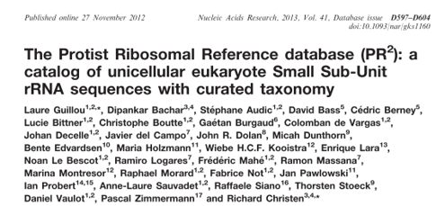

Guillou, L., Bachar, D., Audic, S., Bass, D., Berney, C., Bittner, L., Boutte, C., Burgaud, G., de Vargas, C., Decelle, J., del Campo, J., Dolan, J. R., Dunthorn, M., Edvardsen, B., Holzmann, M., Kooistra, W. H. C. F., Lara, E., Le Bescot, N., Logares, R., … Christen, R. (2013). The Protist Ribosomal Reference database (PR2): A catalog of unicellular eukaryote Small Sub-Unit rRNA sequences with curated taxonomy. Nucleic Acids Research, 41(D1), D597–D604. https://doi.org/10.1093/nar/gks1160
References are available as a Zotero group
Anderson, S. and L. Thompson (2022). “Optimizing an enclosed bead beating extraction method for microbial and fish environmental DNA”. In: Environmental DNA 4.2, pp. 291-303. DOI: 10.1002/edn3.251.
Bachy, C., L. Sudek, C. Choi, et al. (2022). “Phytoplankton surveys in the arctic fram strait demonstrate the tiny eukaryotic alga micromonas and other picoprasinophytes contribute to deep sea export”. In: Microorganisms 10.5. DOI: 10.3390/microorganisms10050961.
Bai, R., M. Zhou, Y. Guo, et al. (2022). “Long-term mowing reinforces connections between soil microbial and plant communities in a temperate steppe”. In: Plant and Soil. DOI: 10.1007/s11104-022-05374-9.
Biard, T. (2022). “Diversity and ecology of Radiolaria in modern oceans”. In: Environmental Microbiology. DOI: 10.1111/1462-2920.16004.
Blais, M., A. Matveev, C. Lovejoy, et al. (2022). “Size-fractionated microbiome structure in subarctic rivers and a coastal plume across DOC and salinity gradients”. In: Frontiers in Microbiology 12. DOI: 10.3389/fmicb.2021.760282.
Bock, C., J. Olefeld, J. Vogt, et al. (2022). “Phylogenetic and functional diversity of Chrysophyceae in inland waters”. In: Organisms Diversity and Evolution 22.2, pp. 327-341. DOI: 10.1007/s13127-022-00554-y.
Brasell, K., X. Pochon, J. Howarth, et al. (2022). “Shifts in DNA yield and biological community composition in stored sediment: Implications for paleogenomic studies”. In: Metabarcoding and Metagenomics 6. DOI: 10.3897/mbmg.6.78128.
Briscoe, A., S. Nichols, H. Hartikainen, et al. (2022). “High-throughput sequencing of faeces provides evidence for dispersal of parasites and pathogens by migratory waterbirds”. In: Molecular Ecology Resources 22.4, pp. 1303-1318. DOI: 10.1111/1755-0998.13548.
Cahoon, A. and R. VanGundy (2022). “Alveolates (dinoflagellates, ciliates and apicomplexans) and Rhizarians are the most common microbial eukaryotes in temperate Appalachian karst caves”. In: Environmental Microbiology Reports. DOI: 10.1111/1758-2229.13060.
Capo, E., M. Monchamp, M. Coolen, et al. (2022). “Environmental paleomicrobiology: using DNA preserved in aquatic sediments to its full potential”. In: Environmental Microbiology. DOI: 10.1111/1462-2920.15913.
Cho, A., D. Tikhonenkov, E. Hehenberger, et al. (2022). “Monophyly of diverse Bigyromonadea and their impact on phylogenomic relationships within stramenopiles”. In: Molecular Phylogenetics and Evolution 171. DOI: 10.1016/j.ympev.2022.107468.
Couch, C., J. Sanders, D. Sweitzer, et al. (2022). “The relationship between dietary trophic level, parasites and the microbiome of Pacific walrus (Odobenus rosmarus divergens)”. In: Proceedings of the Royal Society B: Biological Sciences 289.1972. DOI: 10.1098/rspb.2022.0079.
De Gruyter, J., J. Weedon, E. Elst, et al. (2022). “Arbuscular mycorrhizal inoculation and plant response strongly shape bacterial and eukaryotic soil community trajectories”. In: Soil Biology and Biochemistry 165. DOI: 10.1016/j.soilbio.2021.108524.
Djaoudi, K., J. Onrubia, A. Boukra, et al. (2022). “Seawater copper content controls biofilm bioaccumulation and microbial community on microplastics”. In: Science of the Total Environment 814. DOI: 10.1016/j.scitotenv.2021.152278.
Duerschlag, J., W. Mohr, T. Ferdelman, et al. (2022). “Niche partitioning by photosynthetic plankton as a driver of CO2-fixation across the oligotrophic South Pacific Subtropical Ocean”. In: ISME Journal 16.2, pp. 465-476. DOI: 10.1038/s41396-021-01072-z.
Dumack, K., O. Ferlian, D. Morselli Gysi, et al. (2022). “Contrasting protist communities (Cercozoa: Rhizaria) in pristine and earthworm-invaded North American deciduous forests”. In: Biological Invasions 24.5, pp. 1345-1357. DOI: 10.1007/s10530-021-02726-x.
Durkin, C., I. Cetinic, M. Estapa, et al. (2022). “Tracing the path of carbon export in the ocean though DNA sequencing of individual sinking particles”. In: ISME Journal. DOI: 10.1038/s41396-022-01239-2.
Eshghi Sahraei, S., B. Furneaux, K. Kluting, et al. (2022). “Effects of operational taxonomic unit inference methods on soil microeukaryote community analysis using long-read metabarcoding”. In: Ecology and Evolution 12.3. DOI: 10.1002/ece3.8676.
Fall, F., H. Sanguin, D. Fall, et al. (2022). “Changes in intraspecific diversity of the arbuscular mycorrhizal community involved in Plant interactions between sporobolus robustus kunth and prosopis juliflora (swartz) DC along an environmental gradient”. In: Microbial Ecology 83.4, pp. 886-898. DOI: 10.1007/s00248-021-01779-8.
Ferreira, M. and D. Cleary (2022). “Microeukaryotic communities of golf-ball sponges inside and outside of marine lakes”. In: Journal of Sea Research 180. DOI: 10.1016/j.seares.2021.102151.
Fiore-Donno, A., Z. Human, M. Å tursová, et al. (2022). “Soil compartments (bulk soil, litter, root and rhizosphere) as main drivers of soil protistan communities distribution in forests with different nitrogen deposition”. In: Soil Biology and Biochemistry 168. DOI: 10.1016/j.soilbio.2022.108628.
Fournier, I., C. Lovejoy, and W. Vincent (2022). “Road salt versus urban snow effects on lake microbial communities”. In: Microorganisms 10.4. DOI: 10.3390/microorganisms10040803.
Freudenthal, J., F. Ju, H. Bürgmann, et al. (2022). “Microeukaryotic gut parasites in wastewater treatment plants: diversity, activity, and removal”. In: Microbiome 10.1. DOI: 10.1186/s40168-022-01225-y.
Fuchsman, C., L. Cherubini, and M. Hays (2022). “An analysis of protists in Pacific oxygen deficient zones: implications for Prochlorococcus and N2-producing bacteria”. In: Environmental Microbiology 24.4, pp. 1790-1804. DOI: 10.1111/1462-2920.15893.
Funaki, H., C. Gaonkar, T. Kataoka, et al. (2022). “Horizontal and vertical distribution of Gambierdiscus spp. (Dinophyceae) including novel phylotypes in Japan identified by 18S rDNA metabarcoding”. In: Harmful Algae 111. DOI: 10.1016/j.hal.2021.102163.
Gibson, K., H. Song, and N. Chen (2022). “Metabarcoding analysis of microbiome dynamics during a Phaeocystis globosa bloom in the Beibu Gulf, China”. In: Harmful Algae 114. DOI: 10.1016/j.hal.2022.102217.
Girard, E., A. Langerak, J. Jompa, et al. (2022). “Mitochondrial cytochrome oxidase subunit 1: A promising molecular marker for species identification in foraminifera”. In: Frontiers in Marine Science 9. DOI: 10.3389/fmars.2022.809659.
Guo, S., C. Tao, A. Jousset, et al. (2022). “Trophic interactions between predatory protists and pathogen-suppressive bacteria impact plant health”. In: ISME Journal. DOI: 10.1038/s41396-022-01244-5.
Hu, J., M. Gebremikael, B. Tytgat, et al. (2022). “Combined selective gamma irradiation and pulverized soil inoculation for ecologically relevant soil microfauna studies”. In: Applied Soil Ecology 169. DOI: 10.1016/j.apsoil.2021.104223.
James, C., A. Barton, L. Allen, et al. (2022). “Influence of nutrient supply on plankton microbiome biodiversity and distribution in a coastal upwelling region”. In: Nature Communications 13.1. DOI: 10.1038/s41467-022-30139-4.
Jamieson, T., H. Whiley, J. Gascooke, et al. (2022). “Can aggregate-associated organisms influence the fouling in a SWRO desalination plant?” In: Microorganisms 10.4. DOI: 10.3390/microorganisms10040682.
Keck, F., R. Blackman, R. Bossart, et al. (2022). “Meta-analysis shows both congruence and complementarity of DNA and eDNA metabarcoding to traditional methods for biological community assessment”. In: Molecular Ecology 31.6, pp. 1820-1835. DOI: 10.1111/mec.16364.
Kitagami, Y., K. Obase, and Y. Matsuda (2022). “High-throughput sequencing and conventional morphotyping show different soil nematode assemblages but similar community responses to altitudinal gradients on Mt. Ibuki, Japan”. In: Pedobiologia 90. DOI: 10.1016/j.pedobi.2021.150788.
Lapeyra Martin, J., U. John, C. Royer, et al. (2022). “Fantastic beasts: Unfolding mixoplankton temporal variability in the belgian coastal zone through DNA-Metabarcoding”. In: Frontiers in Marine Science 9. DOI: 10.3389/fmars.2022.786787.
Lara, E., D. Singer, and S. Geisen (2022). “Discrepancies between prokaryotes and eukaryotes need to be considered in soil DNA-based studies”. In: Environmental Microbiology. DOI: 10.1111/1462-2920.16019.
Latz, M., V. Grujcic, S. Brugel, et al. (2022). “Short- and long-read metabarcoding of the eukaryotic rRNA operon: Evaluation of primers and comparison to shotgun metagenomics sequencing”. In: Molecular Ecology Resources. DOI: 10.1111/1755-0998.13623.
Leray, M., N. Knowlton, and R. Machida (2022). “MIDORI2: A collection of quality controlled, preformatted, and regularly updated reference databases for taxonomic assignment of eukaryotic mitochondrial sequences”. In: Environmental DNA. DOI: 10.1002/edn3.303.
Li, H., D. Zhu, A. Sun, et al. (2022). “Effects of soil protists on the antibiotic resistome under long term fertilization”. In: Environmental Pollution 307. DOI: 10.1016/j.envpol.2022.119516.
Li, Q., K. Edwards, C. Schvarcz, et al. (2022). “Broad phylogenetic and functional diversity among mixotrophic consumers of Prochlorococcus”. In: ISME Journal. DOI: 10.1038/s41396-022-01204-z.
Li, Y., R. Yang, L. Guo, et al. (2022). “The composition, biotic network, and assembly of plastisphere protistan taxonomic and functional communities in plastic-mulching croplands”. In: Journal of Hazardous Materials 430. DOI: 10.1016/j.jhazmat.2022.128390.
Li, Z., A. Sun, X. Liu, et al. (2022). “Climate warming increases the proportions of specific antibiotic resistance genes in natural soil ecosystems”. In: Journal of Hazardous Materials 430. DOI: 10.1016/j.jhazmat.2022.128442.
Liu, S., Z. Cui, Y. Zhao, et al. (2022). “Composition and spatial-temporal dynamics of phytoplankton community shaped by environmental selection and interactions in the Jiaozhou Bay”. In: Water Research 218. DOI: 10.1016/j.watres.2022.118488.
Liu, Y., D. Li, H. Gao, et al. (2022). “Regulation of soil micro-foodwebs to root secondary metabolites in cultivated and wild licorice plants”. In: Science of the Total Environment 828. DOI: 10.1016/j.scitotenv.2022.154302.
Metz, S., P. Huber, V. Accattatis, et al. (2022). “Freshwater protists: unveiling the unexplored in a large floodplain system”. In: Environmental Microbiology 24.4, pp. 1731-1745. DOI: 10.1111/1462-2920.15838.
Minardi, D., D. Ryder, J. del Campo, et al. (2022). “Improved high throughput protocol for targeting eukaryotic symbionts in metazoan and eDNA samples”. In: Molecular Ecology Resources 22.2, pp. 664-678. DOI: 10.1111/1755-0998.13509.
Moreno-Mesonero, L., I. Amorós, Y. Moreno, et al. (2022). “Simultaneous detection of less frequent waterborne parasitic protozoa in reused wastewater using amplicon sequencing and qPCR techniques”. In: Journal of Environmental Management 314. DOI: 10.1016/j.jenvman.2022.115029.
Moynihan, M., N. Goodkin, K. Morgan, et al. (2022). “Coral-associated nitrogen fixation rates and diazotrophic diversity on a nutrient-replete equatorial reef”. In: ISME Journal 16.1, pp. 233-246. DOI: 10.1038/s41396-021-01054-1.
Nguyen, B., Q. Chen, J. He, et al. (2022). “Livestock manure spiked with the antibiotic tylosin significantly altered soil protist functional groups”. In: Journal of Hazardous Materials 427. DOI: 10.1016/j.jhazmat.2021.127867.
Okamoto, N., P. Keeling, B. Leander, et al. (2022). “Microbial communities in sandy beaches from the three domains of life differ by microhabitat and intertidal location”. In: Molecular Ecology 31.11, pp. 3210-3227. DOI: 10.1111/mec.16453.
Oliva, A., R. Garner, D. Walsh, et al. (2022). “The occurrence of potentially pathogenic fungi and protists in Canadian lakes predicted using geomatics, in situ and satellite-derived variables: Towards a tele-epidemiological approach”. In: Water Research 209. DOI: 10.1016/j.watres.2021.117935.
Pierella Karlusich, J., E. Pelletier, L. Zinger, et al. (2022). “A robust approach to estimate relative phytoplankton cell abundances from metagenomes”. In: Molecular Ecology Resources. DOI: 10.1111/1755-0998.13592.
Potvin, M., M. Rautio, and C. Lovejoy (2022). “Freshwater microbial eukaryotic core communities, open-water and under-ice specialists in southern victoria island lakes (ekaluktutiak, NU, canada)”. In: Frontiers in Microbiology 12. DOI: 10.3389/fmicb.2021.786094.
Qi, Q., C. Hu, J. Lin, et al. (2022). “Contamination with multiple heavy metals decreases microbial diversity and favors generalists as the keystones in microbial occurrence networks”. In: Environmental Pollution 306. DOI: 10.1016/j.envpol.2022.119406.
Reid, B., J. Servis, M. Timmers, et al. (2022). “18S rDNA amplicon sequence data (V1-V3) of the palmyra atoll national wildlife refuge, central pacific”. In: Metabarcoding and Metagenomics 6, pp. 89-99. DOI: 10.3897/mbmg.6.78762.
Resch, M., M. Schütz, R. Ochoa-Hueso, et al. (2022). “Long-term recovery of above- and below-ground interactions in restored grasslands after topsoil removal and seed addition”. In: Journal of Applied Ecology. DOI: 10.1111/1365-2664.14145.
Rii, Y., L. Peoples, D. Karl, et al. (2022). “Seasonality and episodic variation in picoeukaryote diversity and structure reveal community resilience to disturbances in the North Pacific Subtropical Gyre”. In: Limnology and Oceanography 67.S1, pp. S331-S351. DOI: 10.1002/lno.11916.
Romdhane, S., A. Spor, S. Banerjee, et al. (2022). “Land-use intensification differentially affects bacterial, fungal and protist communities and decreases microbiome network complexity”. In: Environmental Microbiomes 17.1. DOI: 10.1186/s40793-021-00396-9.
Salmaso, N., V. Vasselon, F. Rimet, et al. (2022). “DNA sequence and taxonomic gap analyses to quantify the coverage of aquatic cyanobacteria and eukaryotic microalgae in reference databases: Results of a survey in the Alpine region”. In: Science of the Total Environment 834. DOI: 10.1016/j.scitotenv.2022.155175.
Selak, L., H. Osterholz, I. Stankovic, et al. (2022). “Adaptations of microbial communities and dissolved organics to seasonal pressures in a mesotrophic coastal Mediterranean lake”. In: Environmental Microbiology 24.5, pp. 2282-2298. DOI: 10.1111/1462-2920.15924.
Stefanni, S., L. Mirimin, D. Stankovic, et al. (2022). “Framing cutting-edge integrative deep-sea biodiversity monitoring via environmental DNA and optoacoustic augmented infrastructures”. In: Frontiers in Marine Science 8. DOI: 10.3389/fmars.2021.797140.
Sun, F., X. Xia, M. Simon, et al. (2022). “Anticyclonic eddy driving significant changes in prokaryotic and eukaryotic communities in the south china sea”. In: Frontiers in Marine Science 9. DOI: 10.3389/fmars.2022.773548.
Sun, P., Y. Liao, Y. Wang, et al. (2022). “Contrasting community composition and co-occurrence relationships of the active pico-sized haptophytes in the surface and subsurface chlorophyll maximum layers of the arctic ocean in summer”. In: Microorganisms 10.2. DOI: 10.3390/microorganisms10020248.
Sun, P., Y. Wang, X. Huang, et al. (2022). “Water masses and their associated temperature and cross-domain biotic factors co-shape upwelling microbial communities”. In: Water Research 215. DOI: 10.1016/j.watres.2022.118274.
Suter, E., M. Pachiadaki, G. Taylor, et al. (2022). “Eukaryotic parasites are integral to a productive microbial food web in oxygen-depleted waters”. In: Frontiers in Microbiology 12. DOI: 10.3389/fmicb.2021.764605.
Vannoni, M., V. Créach, D. Ryder, et al. (2022). “Resilience of a microphytobenthos community from the Severn Estuary, UK, to chlorination: A mesocosm approach”. In: Marine Pollution Bulletin 176. DOI: 10.1016/j.marpolbul.2022.113443.
Vasar, M., J. Davison, S. Sepp, et al. (2022). “Global soil microbiomes: A new frontline of biome-ecology research”. In: Global Ecology and Biogeography 31.6, pp. 1120-1132. DOI: 10.1111/geb.13487.
Vaulot, D., S. Geisen, F. Mahé, et al. (2022). “pr2-primers: An 18S rRNA primer database for protists”. In: Molecular Ecology Resources 22.1, pp. 168-179. DOI: 10.1111/1755-0998.13465.
Wang, Y., X. Li, Y. Chi, et al. (2022). “Changes of the freshwater microbial community structure and assembly processes during different sample storage conditions”. In: Microorganisms 10.6. DOI: 10.3390/microorganisms10061176.
Wu, B., L. Zhou, S. Liu, et al. (2022). “Biogeography of soil protistan consumer and parasite is contrasting and linked to microbial nutrient mineralization in forest soils at a wide-scale”. In: Soil Biology and Biochemistry 165. DOI: 10.1016/j.soilbio.2021.108513.
Wu, C., Y. Chao, L. Shu, et al. (2022). “Interactions between soil protists and pollutants: An unsolved puzzle”. In: Journal of Hazardous Materials 429. DOI: 10.1016/j.jhazmat.2022.128297.
Xiong, W., M. Delgado-Baquerizo, Q. Shen, et al. (2022). “Pedogenesis shapes predator-prey relationships within soil microbiomes”. In: Science of the Total Environment 828. DOI: 10.1016/j.scitotenv.2022.154405.
Xu, D., H. Kong, E. Yang, et al. (2022). “Spatial dynamics of active microeukaryotes along a latitudinal gradient: Diversity, assembly process, and co-occurrence relationships”. In: Environmental Research 212. DOI: 10.1016/j.envres.2022.113234.
Yin, Y., M. Li, C. Yang, et al. (2022). “Phagotrophic protists can change microbial nitrogen conversion patterns during swine manure composting”. In: Biomass Conversion and Biorefinery. DOI: 10.1007/s13399-022-02318-2.
Yung, C., E. Redondo, F. Sanchez, et al. (2022). “Diversity and evolution of mamiellophyceae: Early-diverging phytoplanktonic green algae containing many cosmopolitan species”. In: Journal of Marine Science and Engineering 10.2. DOI: 10.3390/jmse10020240.
Zafeiropoulos, H., S. Paragkamian, S. Ninidakis, et al. (2022). “PREGO: A literature and data-mining resource to associate microorganisms, biological processes, and environment types”. In: Microorganisms 10.2. DOI: 10.3390/microorganisms10020293.
Zhao, H., Z. Zhang, S. Nair, et al. (2022). “Vertically exported phytoplankton (¡ 20 µm) and their correlation network with bacterioplankton along a deep-sea seamount”. In: Frontiers in Marine Science 9. DOI: 10.3389/fmars.2022.862494.
Zhao, Z., H. Li, Y. Sun, et al. (2022). “How habitat heterogeneity shapes bacterial and protistan communities in temperate coastal areas near estuaries”. In: Environmental Microbiology 24.4, pp. 1775-1789. DOI: 10.1111/1462-2920.15892.
Abdullah Al, M., Y. Xue, P. Xiao, et al. (2021). “DNA metabarcoding reveals the significant influence of anthropogenic effects on microeukaryotic communities in urban waterbodies”. In: Environmental Pollution 285. DOI: 10.1016/j.envpol.2021.117336.
Acinas, S., P. Sánchez, G. Salazar, et al. (2021). “Deep ocean metagenomes provide insight into the metabolic architecture of bathypelagic microbial communities”. In: Communications Biology 4.1. DOI: 10.1038/s42003-021-02112-2.
Armbrecht, L., G. Hallegraeff, C. Bolch, et al. (2021). “Hybridisation capture allows DNA damage analysis of ancient marine eukaryotes”. In: Scientific Reports 11.1. DOI: 10.1038/s41598-021-82578-6.
Asiloglu, R., K. Shiroishi, K. Suzuki, et al. (2021). “Soil properties have more significant effects on the community composition of protists than the rhizosphere effect of rice plants in alkaline paddy field soils”. In: Soil Biology and Biochemistry 161. DOI: 10.1016/j.soilbio.2021.108397.
Beng, K., J. Wolinska, E. Funke, et al. (2021). “Temporal dynamics of freshwater planktonic parasites inferred using a DNA metabarcoding time-series”. In: Parasitology 148.13, pp. 1602-1611. DOI: 10.1017/S0031182021001293.
Bonfantine, K., S. Trevathan-Tackett, T. Matthews, et al. (2021). “Dumpster diving for diatom plastid 16S rRNA genes”. In: PeerJ 9. DOI: 10.7717/peerj.11576.
Brandt, M., F. Pradillon, B. Trouche, et al. (2021). “Evaluating sediment and water sampling methods for the estimation of deep-sea biodiversity using environmental DNA”. In: Scientific Reports 11.1. DOI: 10.1038/s41598-021-86396-8.
Bruhn, C., S. Wohlrab, B. Krock, et al. (2021). “Seasonal plankton succession is in accordance with phycotoxin occurrence in Disko Bay, West Greenland”. In: Harmful Algae 103. DOI: 10.1016/j.hal.2021.101978.
Burki, F., M. Sandin, and M. Jamy (2021). “Diversity and ecology of protists revealed by metabarcoding”. In: Current Biology 31.19, pp. R1267-R1280. DOI: 10.1016/j.cub.2021.07.066.
Canino, A., A. Bouchez, C. Laplace-Treyture, et al. (2021). “Phytool, a ShinyApp to homogenise taxonomy of freshwater microalgae from DNA barcodes and microscopic observations”. In: Metabarcoding and Metagenomics 5, pp. 199-205. DOI: 10.3897/mbmg.5.74096.
Capo, E., C. Giguet-Covex, A. Rouillard, et al. (2021). “Lake sedimentary dna research on past terrestrial and aquatic biodiversity: Overview and recommendations”. In: Quaternary 4.1. DOI: 10.3390/quat4010006.
Casey, J., E. Ransome, A. Collins, et al. (2021). “DNA metabarcoding marker choice skews perception of marine eukaryotic biodiversity”. In: Environmental DNA 3.6, pp. 1229-1246. DOI: 10.1002/edn3.245.
Castagna, A., H. Dierssen, E. Organelli, et al. (2021). “Optical detection of harmful algal blooms in the belgian coastal zone: A cautionary tale of chlorophyll c3”. In: Frontiers in Marine Science 8. DOI: 10.3389/fmars.2021.770340.
Catlett, D., K. Son, and C. Liang (2021). “EnsembleTax: An R package for determinations of ensemble taxonomic assignments of phylogenetically-informative marker gene sequences”. In: PeerJ 9. DOI: 10.7717/peerj.11865.
Cecchetto, M., A. Di Cesare, E. Eckert, et al. (2021). “Antarctic coastal nanoplankton dynamics revealed by metabarcoding of desalination plant filters: Detection of short-term events and implications for routine monitoring”. In: Science of the Total Environment 757. DOI: 10.1016/j.scitotenv.2020.143809.
Ceja-Navarro, J., Y. Wang, D. Ning, et al. (2021). “Protist diversity and community complexity in the rhizosphere of switchgrass are dynamic as plants develop”. In: Microbiome 9.1. DOI: 10.1186/s40168-021-01042-9.
Chang, F., J. Yang, A. Liu, et al. (2021). “Community assembly processes as a mechanistic explanation of the predator-prey diversity relationship in marine microbes”. In: Frontiers in Marine Science 8. DOI: 10.3389/fmars.2021.651565.
Charvet, S., E. Kim, A. Subramaniam, et al. (2021). “Small pigmented eukaryote assemblages of the western tropical North Atlantic around the Amazon River plume during spring discharge”. In: Scientific Reports 11.1. DOI: 10.1038/s41598-021-95676-2.
Chen, B., W. Xiong, J. Qi, et al. (2021). “Trophic interrelationships drive the biogeography of protistan community in agricultural ecosystems”. In: Soil Biology and Biochemistry 163. DOI: 10.1016/j.soilbio.2021.108445.
Chen, J., L. Dong, X. Ma, et al. (2021). “Microbial community monitoring in baiyangdian lake based on eDNA technology [基于 eDNA 技术的白洋淀微型生物群è½ç›’测]”. In: Journal of Agro-Environment Science 40.9, pp. 1773-1786. DOI: 10.11654/jaes.2021-0632.
Chen, Y., Q. Xu, K. Gibson, et al. (2021). “Metabarcoding dissection of harmful algal bloom species in the East China Sea off Southern Zhejiang Province in late spring”. In: Marine Pollution Bulletin 169. DOI: 10.1016/j.marpolbul.2021.112586.
Choe, Y., M. Kim, and Y. Lee (2021). “Distinct microbial communities in adjacent rock and soil substrates on a high arctic polar desert”. In: Frontiers in Microbiology 11. DOI: 10.3389/fmicb.2020.607396.
Chrismas, N., R. Allen, A. Hollingsworth, et al. (2021). “Complex photobiont diversity in the marine lichen Lichina pygmaea”. In: Journal of the Marine Biological Association of the United Kingdom 101.4, pp. 667-674. DOI: 10.1017/S002531542100062X.
Christaki, U., I. Skouroliakou, A. Delegrange, et al. (2021). “Microzooplankton diversity and potential role in carbon cycling of contrasting Southern Ocean productivity regimes”. In: Journal of Marine Systems 219. DOI: 10.1016/j.jmarsys.2021.103531.
Cohen, N., M. McIlvin, D. Moran, et al. (2021). “Dinoflagellates alter their carbon and nutrient metabolic strategies across environmental gradients in the central Pacific Ocean”. In: Nature Microbiology 6.2, pp. 173-186. DOI: 10.1038/s41564-020-00814-7.
Cohen, N., A. Noble, D. Moran, et al. (2021). “Hydrothermal trace metal release and microbial metabolism in the northeastern Lau Basin of the South Pacific Ocean”. In: Biogeosciences (Online) 18.19, pp. 5397-5422. DOI: 10.5194/bg-18-5397-2021.
Cordier, T., L. Alonso-Sáez, L. Apothéloz-Perret-Gentil, et al. (2021). “Ecosystems monitoring powered by environmental genomics: A review of current strategies with an implementation roadmap”. In: Molecular Ecology 30.13, pp. 2937-2958. DOI: 10.1111/mec.15472.
Cui, Z., Q. Xu, K. Gibson, et al. (2021). “Metabarcoding analysis of harmful algal bloom species in the Changjiang Estuary, China”. In: Science of the Total Environment 782. DOI: 10.1016/j.scitotenv.2021.146823.
Dai, Z., X. Lv, B. Ma, et al. (2021). “Concurrent and rapid recovery of bacteria and protist communities in Canadian boreal forest ecosystems following wildfire”. In: Soil Biology and Biochemistry 163. DOI: 10.1016/j.soilbio.2021.108452.
David, G., D. Moreira, G. Reboul, et al. (2021). “Environmental drivers of plankton protist communities along latitudinal and vertical gradients in the oldest and deepest freshwater lake”. In: Environmental Microbiology 23.3, pp. 1436-1451. DOI: 10.1111/1462-2920.15346.
De Mesquita, C., L. Nichols, M. Gebert, et al. (2021). “Structure of chimpanzee gut microbiomes across tropical Africa”. In: mSystems 6.3. DOI: 10.1128/mSystems.01269-20.
Degenhardt, J., S. Khodami, F. Milke, et al. (2021). “The three domains of life within the discharge area of a shallow subterranean estuary at a high energy beach”. In: Frontiers in Environmental Science 9. DOI: 10.3389/fenvs.2021.642098.
Deutschmann, I., G. Lima-Mendez, A. Krabberød, et al. (2021). “Disentangling environmental effects in microbial association networks”. In: Microbiome 9.1. DOI: 10.1186/s40168-021-01141-7.
Di Capua, I., R. Piredda, M. Mazzocchi, et al. (2021). “Metazoan diversity and seasonality through eDNA metabarcoding at a Mediterranean long-term ecological research site”. In: ICES Journal of Marine Science 78.9, pp. 3303-3316. DOI: 10.1093/icesjms/fsab059.
Diner, R., D. Kaul, A. Rabines, et al. (2021). “Pathogenic vibrio species are associated with distinct environmental niches and planktonic taxa in southern california (usa) aquatic microbiomes”. In: mSystems 6.4. DOI: 10.1128/mSystems.00571-21.
Doliwa, A., M. Dunthorn, E. Rassoshanska, et al. (2021). “Identifying potential hosts of short-branch microsporidia”. In: Microbial Ecology 82.2, pp. 549-553. DOI: 10.1007/s00248-020-01657-9.
Dubuffet, A., M. Chauvet, A. Moné, et al. (2021). “A phylogenetic framework to investigate the microsporidian communities through metabarcoding and its application to lake ecosystems”. In: Environmental Microbiology 23.8, pp. 4344-4359. DOI: 10.1111/1462-2920.15618.
Dumack, K. and M. Bonkowski (2021). “Protists in the plant microbiome: an untapped field of research”. In: Methods in Molecular Biology 2232, pp. 77-84. DOI: 10.1007/978-1-0716-1040-4_8.
Egge, E., S. Elferink, D. Vaulot, et al. (2021). “An 18S V4 rRNA metabarcoding dataset of protist diversity in the Atlantic inflow to the Arctic Ocean, through the year and down to 1000m depth”. In: Earth System Science Data 13.10, pp. 4913-4928. DOI: 10.5194/essd-13-4913-2021.
Fermani, P., S. Metz, V. Balagué, et al. (2021). “Microbial eukaryote assemblages and potential novel diversity in four tropical East African Great Lakes”. In: FEMS Microbiology Ecology 97.9. DOI: 10.1093/femsec/fiab114.
Forster, D., Z. Qu, G. Pitsch, et al. (2021). “Lake ecosystem robustness and resilience inferred from a climate-stressed protistan plankton network”. In: Microorganisms 9.3, pp. 1-20. DOI: 10.3390/microorganisms9030549.
Fournier, I., C. Lovejoy, and W. Vincent (2021). “Changes in the community structure of under-ice and open-water microbiomes in urban lakes exposed to road salts”. In: Frontiers in Microbiology 12. DOI: 10.3389/fmicb.2021.660719.
Francioli, D., G. Lentendu, S. Lewin, et al. (2021). “DNA metabarcoding for the characterization of terrestrial microbiota—pitfalls and solutions”. In: Microorganisms 9.2, pp. 1-29. DOI: 10.3390/microorganisms9020361.
Freyria, N., N. Joli, and C. Lovejoy (2021). “A decadal perspective on north water microbial eukaryotes as Arctic Ocean sentinels”. In: Scientific Reports 11.1. DOI: 10.1038/s41598-021-87906-4.
Ganser, M., D. Forster, W. Liu, et al. (2021). “Genetic diversity in marine planktonic ciliates (alveolata, ciliophora) suggests distinct geographical patterns data from chinese and european coastal waters”. In: Frontiers in Marine Science 8. DOI: 10.3389/fmars.2021.643822.
Gauthier, J., D. Walsh, D. Selbie, et al. (2021). “Evaluating the congruence between DNA-based and morphological taxonomic approaches in water and sediment trap samples: Analyses of a 36-month time series from a temperate monomictic lake”. In: Limnology and Oceanography 66.8, pp. 3020-3039. DOI: 10.1002/lno.11856.
Genitsaris, S., N. Stefanidou, Y. Beeri-Shlevin, et al. (2021). “Air-dispersed aquatic microorganisms show establishment and growth preferences in different freshwater colonisation habitats”. In: FEMS Microbiology Ecology 97.9. DOI: 10.1093/femsec/fiab122.
Glasner, B., C. Henr'iquez-Castillo, F. Alfaro, et al. (2021). “Decoupling of biotic and abiotic patterns in a coastal area affected by chronic metal micronutrients disturbances”. In: Marine Pollution Bulletin 166. DOI: 10.1016/j.marpolbul.2020.111608.
Gong, X., X. Chen, S. Geisen, et al. (2021). “Agricultural habitats are dominated by rapidly evolving nematodes revealed through phylogenetic comparative methods”. In: Soil Biology and Biochemistry 155. DOI: 10.1016/j.soilbio.2021.108183.
Gottschling, M., L. Czech, F. Mahé, et al. (2021). “The windblown: Possible explanations for dinophyte DNA in forest soils”. In: Journal of Eukaryotic Microbiology 68.1. DOI: 10.1111/jeu.12833.
Greco, M., R. Morard, and M. Kucera (2021). “Single-cell metabarcoding reveals biotic interactions of the Arctic calcifier Neogloboquadrina pachyderma with the eukaryotic pelagic community”. In: Journal of Plankton Research 43.2, pp. 113-125. DOI: 10.1093/plankt/fbab015.
Guo, S., W. Xiong, X. Hang, et al. (2021). “Protists as main indicators and determinants of plant performance”. In: Microbiome 9.1. DOI: 10.1186/s40168-021-01025-w.
Hamard, S., R. Céréghino, M. Barret, et al. (2021). “Contribution of microbial photosynthesis to peatland carbon uptake along a latitudinal gradient”. In: Journal of Ecology 109.9, pp. 3424-3441. DOI: 10.1111/1365-2745.13732.
Hamilton, M., M. Mascioni, E. Hehenberger, et al. (2021). “Spatiotemporal variations in antarctic protistan communities highlight phytoplankton diversity and seasonal dominance by a novel cryptophyte lineage”. In: mBio 12.6. DOI: 10.1128/mBio.02973-21.
Herrera, G., L. Vega, M. Patarroyo, et al. (2021). “Gut microbiota composition in health-care facility-and community-onset diarrheic patients with Clostridioides difficile infection”. In: Scientific Reports 11.1. DOI: 10.1038/s41598-021-90380-7.
Hii, K., M. Mohd-Din, Z. Luo, et al. (2021). “Diverse harmful microalgal community assemblages in the Johor Strait and the environmental effects on its community dynamics”. In: Harmful Algae 107. DOI: 10.1016/j.hal.2021.102077.
Hilton, S., E. Picot, S. Schreiter, et al. (2021). “Identification of microbial signatures linked to oilseed rape yield decline at the landscape scale”. In: Microbiome 9.1. DOI: 10.1186/s40168-020-00972-0.
Hohlfeld, M., A. Schoenle, and H. Arndt (2021). “Horizontal and vertical small-scale patterns of protist communities at the Atlantic deep-sea floor”. In: Deep-Sea Research Part I: Oceanographic Research Papers 171. DOI: 10.1016/j.dsr.2021.103515.
Hu, S., E. Herrera, A. Smith, et al. (2021). “Protistan grazing impacts microbial communities and carbon cycling at deep-sea hydrothermal vents”. In: Proceedings of the National Academy of Sciences of the United States of America 118.29. DOI: 10.1073/pnas.2102674118.
Huang, H., Q. Xu, K. Gibson, et al. (2021). “Molecular characterization of harmful algal blooms in the Bohai Sea using metabarcoding analysis”. In: Harmful Algae 106. DOI: 10.1016/j.hal.2021.102066.
Huang, X., J. Wang, K. Dumack, et al. (2021). “Protists modulate fungal community assembly in paddy soils across climatic zones at the continental scale”. In: Soil Biology and Biochemistry 160. DOI: 10.1016/j.soilbio.2021.108358.
Iniesto, M., D. Moreira, G. Reboul, et al. (2021). “Core microbial communities of lacustrine microbialites sampled along an alkalinity gradient”. In: Environmental Microbiology 23.1, pp. 51-68. DOI: 10.1111/1462-2920.15252.
Irion, S., U. Christaki, H. Berthelot, et al. (2021). “Small phytoplankton contribute greatly to CO2-fixation after the diatom bloom in the Southern Ocean”. In: ISME Journal 15.9, pp. 2509-2522. DOI: 10.1038/s41396-021-00915-z.
Izaguirre, I., F. Unrein, M. Schiaffino, et al. (2021). “Phylogenetic diversity and dominant ecological traits of freshwater Antarctic Chrysophyceae”. In: Polar Biology 44.5, pp. 941-957. DOI: 10.1007/s00300-021-02850-3.
Jamieson, T., S. Balzano, C. Le Lan, et al. (2021). “Survival of the fittest: Prokaryotic communities within a SWRO desalination plant”. In: Desalination 514. DOI: 10.1016/j.desal.2021.115152.
Jauss, R., A. Nowack, S. Walden, et al. (2021). “To the canopy and beyond: Air dispersal as a mechanism of ubiquitous protistan pathogen assembly in tree canopies”. In: European Journal of Protistology 80. DOI: 10.1016/j.ejop.2021.125805.
Joglar, V., X. Ãlvarez-Salgado, A. Gago-Martinez, et al. (2021). “Cobalamin and microbial plankton dynamics along a coastal to offshore transect in the Eastern North Atlantic Ocean”. In: Environmental Microbiology 23.3, pp. 1559-1583. DOI: 10.1111/1462-2920.15367.
Joglar, V., B. Pontiller, S. Mart'inez-Garc'ia, et al. (2021). “Microbial plankton community structure and function responses to vitamin B12and B1Amendments in an upwelling system”. In: Applied and Environmental Microbiology 87.22. DOI: 10.1128/AEM.01525-21.
Kawachi, M., T. Nakayama, M. Kayama, et al. (2021). “Rappemonads are haptophyte phytoplankton”. In: Current Biology 31.11, pp. 2395-2403.e4. DOI: 10.1016/j.cub.2021.03.012.
Kawamoto, Y., H. Kato, Y. Nagata, et al. (2021). “Microbial communities developing within bulk sediments under fish carcasses on a tidal flat”. In: PLoS ONE 16.2 February. DOI: 10.1371/journal.pone.0247220.
Kobari, T., Y. Tokumo, I. Sato, et al. (2021). “Metabarcoding analysis of trophic sources and linkages in the plankton community of the Kuroshio and neighboring waters”. In: Scientific Reports 11.1. DOI: 10.1038/s41598-021-02083-8.
Lambert, S., J. Lozano, F. Bouget, et al. (2021). “Seasonal marine microorganisms change neighbours under contrasting environmental conditions”. In: Environmental Microbiology 23.5, pp. 2592-2604. DOI: 10.1111/1462-2920.15482.
Latorre, F., I. Deutschmann, A. Labarre, et al. (2021). “Niche adaptation promoted the evolutionary diversification of tiny ocean predators”. In: Proceedings of the National Academy of Sciences of the United States of America 118.25. DOI: 10.1073/pnas.2020955118.
Lattaud, J., S. Balzano, M. van der Meer, et al. (2021). “Sources and seasonality of long-chain diols in a temperate lake (Lake Geneva)”. In: Organic Geochemistry 156. DOI: 10.1016/j.orggeochem.2021.104223.
Lee, S., D. Lee, H. Kang, et al. (2021). “Analysis of in vitro digestion using human gut microbiota in adult and elderly individuals”. In: Food Chemistry 362. DOI: 10.1016/j.foodchem.2021.130228.
Lejzerowicz, F., A. Gooday, I. Barrenechea Angeles, et al. (2021). “Eukaryotic biodiversity and spatial patterns in the clarion-clipperton zone and other abyssal regions: Insights from sediment DNA and RNA metabarcoding”. In: Frontiers in Marine Science 8. DOI: 10.3389/fmars.2021.671033.
Lentendu, G. and M. Dunthorn (2021). “Phylogenetic relatedness drives protist assembly in marine and terrestrial environments”. In: Global Ecology and Biogeography 30.7, pp. 1532-1544. DOI: 10.1111/geb.13317.
Li, F., A. Sun, X. Jiao, et al. (2021). “Specific protistan consumers and parasites are responsive to inorganic fertilization in rhizosphere and bulk soils”. In: Journal of Soils and Sediments 21.12, pp. 3801-3812. DOI: 10.1007/s11368-021-03052-4.
Li, F., Y. Zhang, F. Altermatt, et al. (2021). “Consideration of multitrophic biodiversity and ecosystem functions improves indices on river ecological status”. In: Environmental Science and Technology 55.24, pp. 16434-16444. DOI: 10.1021/acs.est.1c05899.
Li, R., C. Hu, J. Wang, et al. (2021). “Biogeographical distribution and community assembly of active protistan assemblages along an estuary to a basin transect of the northern south China sea”. In: Microorganisms 9.2, pp. 1-20. DOI: 10.3390/microorganisms9020351.
Liu, S., M. Zhang, Y. Zhao, et al. (2021). “Biodiversity and spatial-temporal dynamics of margalefidinium species in jiaozhou bay, China”. In: International Journal of Environmental Research and Public Health 18.21. DOI: 10.3390/ijerph182111637.
Liu, X., N. Xie, M. Bai, et al. (2021). “Composition change and decreased diversity of microbial eukaryotes in the coastal upwelling waters of South China Sea”. In: Science of the Total Environment 795. DOI: 10.1016/j.scitotenv.2021.148892.
Ma, Y., Y. Pan, Q. Liu, et al. (2021). “Co-occurrence patterns and assembly processes of microeukaryotic communities in a semi-enclosed aquaculture bay”. In: Continental Shelf Research 228. DOI: 10.1016/j.csr.2021.104550.
Majaneva, M., J. Rintala, and J. Blomster (2021). “Taxonomically and functionally distinct ciliophora assemblages inhabiting baltic sea ice”. In: Microbial Ecology. DOI: 10.1007/s00248-021-01915-4.
Martini, S., F. Larras, A. Boyé, et al. (2021). “Functional trait-based approaches as a common framework for aquatic ecologists”. In: Limnology and Oceanography 66.3, pp. 965-994. DOI: 10.1002/lno.11655.
McLennan, K., R. Ruvindy, M. Ostrowski, et al. (2021). “Assessing the use of molecular barcoding and QPCR for investigating the ecology of prorocentrum minimum (Dinophyceae), a harmful algal species”. In: Microorganisms 9.3, pp. 1-20. DOI: 10.3390/microorganisms9030510.
McNichol, J., P. Berube, S. Biller, et al. (2021). “Evaluating and improving small subunit rrna pcr primer coverage for bacteria, archaea, and eukaryotes using metagenomes from global ocean surveys”. In: mSystems 6.3. DOI: 10.1128/mSystems.00565-21.
Meng, L., H. Endo, R. Blanc-Mathieu, et al. (2021). “Quantitative assessment of nucleocytoplasmic large DNA virus and host interactions predicted by co-occurrence analyses”. In: mSphere 6.2, pp. 1-18. DOI: 10.1128/mSphere.01298-20.
Meredith, C., J. Hoffman, A. Trebitz, et al. (2021). “Evaluating the performance of DNA metabarcoding for assessment of zooplankton communities in Western Lake Superior using multiple markers”. In: Metabarcoding and Metagenomics 5, pp. 83-97. DOI: 10.3897/MBMG.5.64735.
Michealsamy, A., L. Thangamani, G. Manivel, et al. (2021). “Current research and applications of meta-omics stratagems in bioremediation: A bird’s-eye view”. In: Journal of Applied Biotechnology Reports 8.2, pp. 109-115. DOI: 10.30491/jabr.2020.237662.1248.
Mikryukov, V., O. Dulya, G. Likhodeevskii, et al. (2021). “Analysis of ecological networks in multicomponent communities of microorganisms: Possibilities, limitations, and potential errors”. In: Russian Journal of Ecology 52.3, pp. 188-200. DOI: 10.1134/S1067413621030085.
Mo, Y., F. Peng, X. Gao, et al. (2021). “Low shifts in salinity determined assembly processes and network stability of microeukaryotic plankton communities in a subtropical urban reservoir”. In: Microbiome 9.1. DOI: 10.1186/s40168-021-01079-w.
Mthethwa, N., I. Amoah, P. Reddy, et al. (2021). “A review on application of next-generation sequencing methods for profiling of protozoan parasites in water: Current methodologies, challenges, and perspectives”. In: Journal of Microbiological Methods 187. DOI: 10.1016/j.mimet.2021.106269.
Neupane, S., C. Saski, and D. Nayduch (2021). “House fly larval grazing alters dairy cattle manure microbial communities”. In: BMC Microbiology 21.1. DOI: 10.1186/s12866-021-02418-5.
Nguyen, B., Q. Chen, Z. Yan, et al. (2021). “Distinct factors drive the diversity and composition of protistan consumers and phototrophs in natural soil ecosystems”. In: Soil Biology and Biochemistry 160. DOI: 10.1016/j.soilbio.2021.108317.
Novotny, A., S. Zamora-Terol, and M. Winder (2021). “DNA metabarcoding reveals trophic niche diversity of micro and mesozooplankton species”. In: Proceedings of the Royal Society B: Biological Sciences 288.1953. DOI: 10.1098/rspb.2021.0908.
Nowinski, B. and M. Moran (2021). “Niche dimensions of a marine bacterium are identified using invasion studies in coastal seawater”. In: Nature Microbiology 6.4, pp. 524-532. DOI: 10.1038/s41564-020-00851-2.
Obertegger, U., M. Pindo, and G. Flaim (2021). “Do inferences about freshwater phytoplankton communities change when based on microscopy or high-throughput sequencing data?” In: Freshwater Biology 66.4, pp. 640-655. DOI: 10.1111/fwb.13667.
Ollison, G., S. Hu, L. Mesrop, et al. (2021). “Come rain or shine: Depth not season shapes the active protistan community at station ALOHA in the North Pacific Subtropical Gyre”. In: Deep-Sea Research Part I: Oceanographic Research Papers 170. DOI: 10.1016/j.dsr.2021.103494.
Pappalardo, P., A. Collins, K. Pagenkopp Lohan, et al. (2021). “The role of taxonomic expertise in interpretation of metabarcoding studies”. In: ICES Journal of Marine Science 78.9, pp. 3397-3410. DOI: 10.1093/icesjms/fsab082.
Pauli, N., K. Metfies, E. Pakhomov, et al. (2021). “Selective feeding in Southern Ocean key grazers—diet composition of krill and salps”. In: Communications Biology 4.1. DOI: 10.1038/s42003-021-02581-5.
Pearman, J., U. von Ammon, O. Laroche, et al. (2021). “Metabarcoding as a tool to enhance marine surveillance of nonindigenous species in tropical harbors: A case study in Tahiti”. In: Environmental DNA 3.1, pp. 173-189. DOI: 10.1002/edn3.154.
Picot, E., C. Hale, S. Hilton, et al. (2021). “Contrasting responses of rhizosphere bacterial, fungal, protist, and nematode communities to nitrogen fertilization and crop genotype in field grown oilseed rape (brassica napus)”. In: Frontiers in Sustainable Food Systems 5. DOI: 10.3389/fsufs.2021.613269.
Ramond, P., R. Siano, S. Schmitt, et al. (2021). “Phytoplankton taxonomic and functional diversity patterns across a coastal tidal front”. In: Scientific Reports 11.1. DOI: 10.1038/s41598-021-82071-0.
Ricci, F., A. Fordyce, W. Leggat, et al. (2021). “Multiple techniques point to oxygenic phototrophs dominating the Isopora palifera skeletal microbiome”. In: Coral reefs (Online) 40.2, pp. 275-282. DOI: 10.1007/s00338-021-02068-z.
Rimet, F., E. Aylagas, A. Borja, et al. (2021). “Metadata standards and practical guidelines for specimen and DNA curation when building barcode reference libraries for aquatic life”. In: Metabarcoding and Metagenomics 5, pp. 17-33. DOI: 10.3897/mbmg.5.58056.
Roshan, S., K. Dumack, M. Bonkowski, et al. (2021). “Taxonomic and functional diversity of heterotrophic protists (Cercozoa and endomyxa) from biological soil crusts”. In: Microorganisms 9.2, pp. 1-14. DOI: 10.3390/microorganisms9020205.
Sakamoto, T. and J. Ortega (2021). “Taxallnomy: an extension of NCBI Taxonomy that produces a hierarchically complete taxonomic tree”. In: BMC Bioinformatics 22.1. DOI: 10.1186/s12859-021-04304-3.
Schiwitza, S. and F. Nitsche (2021). “A needle in the haystack mapping sequences to morphology exemplified by the loricate choanoflagellate enibas thessalia sp. nov. (acanthoecida, acanthoecidae)”. In: Protist 172.1. DOI: 10.1016/j.protis.2020.125782.
Schoenle, A., M. Hohlfeld, K. Hermanns, et al. (2021). “High and specific diversity of protists in the deep-sea basins dominated by diplonemids, kinetoplastids, ciliates and foraminiferans”. In: Communications Biology 4.1. DOI: 10.1038/s42003-021-02012-5.
Shemi, A., U. Alcolombri, D. Schatz, et al. (2021). “Dimethyl sulfide mediates microbial predatorprey interactions between zooplankton and algae in the ocean”. In: Nature Microbiology 6.11, pp. 1357-1366. DOI: 10.1038/s41564-021-00971-3.
Shi, J., Y. Lei, H. Li, et al. (2021). “NGS-metabarcoding revealing novel foraminiferal diversity in the Western Pacific Magellan Seamount sediments”. In: Journal of Oceanology and Limnology 39.5, pp. 1718-1729. DOI: 10.1007/s00343-021-0427-0.
Shore, A., R. Day, J. Stewart, et al. (2021). “Dichotomy between regulation of coral bacterial communities and calcification physiology under ocean acidification conditions”. In: Applied and Environmental Microbiology 87.6, pp. 1-18. DOI: 10.1128/AEM.02189-20.
Siano, R., M. Lassudrie, P. Cuzin, et al. (2021). “Sediment archives reveal irreversible shifts in plankton communities after World War II and agricultural pollution”. In: Current Biology 31.12, pp. 2682-2689.e7. DOI: 10.1016/j.cub.2021.03.079.
Singer, D., C. Seppey, G. Lentendu, et al. (2021). “Protist taxonomic and functional diversity in soil, freshwater and marine ecosystems”. In: Environment International 146. DOI: 10.1016/j.envint.2020.106262.
Snyder, R., J. Moss, L. Santoferrara, et al. (2021). “Ciliate microzooplankton from the northeastern gulf of mexico”. In: ICES Journal of Marine Science 78.9, pp. 3356-3371. DOI: 10.1093/icesjms/fsab002.
Soler, P., L. Moreno-Mesonero, A. Zornoza, et al. (2021). “Characterization of eukaryotic microbiome and associated bacteria communities in a drinking water treatment plant”. In: Science of the Total Environment 797. DOI: 10.1016/j.scitotenv.2021.149070.
Steven, B., J. LaReau, S. Taerum, et al. (2021). “What’s under the christmas tree? A soil sulfur amendment lowers soil pH and alters fir tree rhizosphere bacterial and eukaryotic communities, their interactions, and functional traits”. In: Microbiology Spectrum 9.1, pp. 1-14. DOI: 10.1128/Spectrum.00166-21.
Sun, A., X. Jiao, Q. Chen, et al. (2021). “Fertilization alters protistan consumers and parasites in crop-associated microbiomes”. In: Environmental Microbiology 23.4, pp. 2169-2183. DOI: 10.1111/1462-2920.15385.
Sun, P., X. Huang, Y. Wang, et al. (2021). “Protistan-bacterial microbiota exhibit stronger species sorting and greater network connectivity offshore than nearshore across a coast-to-basin continuum”. In: mSystems 6.5. DOI: 10.1128/mSystems.00100-21.
Sun, P., S. Zhang, Y. Wang, et al. (2021). “Biogeographic role of the kuroshio current intrusion in the microzooplankton community in the boundary zone of the northern south china sea”. In: Microorganisms 9.5. DOI: 10.3390/microorganisms9051104.
Thioye, B., H. Sanguin, A. Kane, et al. (2021). “Mycorrhizal inoculation increases fruit production without disturbance of native arbuscular mycorrhizal community in jujube tree orchards (Senegal)”. In: Symbiosis (Philadelphia, Pa.) 83.3, pp. 361-372. DOI: 10.1007/s13199-021-00757-5.
Thompson, A. (2021). “Phagotrophic protists (protozoa) in Antarctic terrestrial ecosystems: diversity, distribution, ecology, and best research practices”. In: Polar Biology 44.8, pp. 1467-1484. DOI: 10.1007/s00300-021-02896-3.
Thompson, A., A. Roth-monzón, Z. Aanderud, et al. (2021). “Phagotrophic protists and their associates: Evidence for preferential grazing in an abiotically driven soil ecosystem”. In: Microorganisms 9.8. DOI: 10.3390/microorganisms9081555.
Trefault, N., R. De la Iglesia, M. Moreno-Pino, et al. (2021). “Annual phytoplankton dynamics in coastal waters from fildes bay, western antarctic peninsula”. In: Scientific Reports 11.1. DOI: 10.1038/s41598-020-80568-8.
Vega, L., G. Herrera, M. Munoz, et al. (2021). “Gut microbiota profiles in diarrheic patients with co-occurrence of Clostridioides difficile and Blastocystis”. In: PLoS ONE 16.3 March. DOI: 10.1371/journal.pone.0248185.
Vega, L., J. Jaimes, D. Morales, et al. (2021). “Microbial communities’ characterization in urban recreational surface waters using next generation sequencing”. In: Microbial Ecology 81.4, pp. 847-863. DOI: 10.1007/s00248-020-01649-9.
Vernette, C., N. Henry, J. Lecubin, et al. (2021). “The Ocean barcode atlas: A web service to explore the biodiversity and biogeography of marine organisms”. In: Molecular Ecology Resources 21.4, pp. 1347-1358. DOI: 10.1111/1755-0998.13322.
Vilne, B., L. Granti-Ievi, J. , et al. (2021). “Investigating bacterial and free-living protozoa diversity in biofilms of hot water pipes of apartment buildings in the city of riga (latvia)”. In: Frontiers in Water 3. DOI: 10.3389/frwa.2021.799840.
Walden, S., R. Jauss, K. Feng, et al. (2021). “On the phenology of protists: Recurrent patterns reveal seasonal variation of protistan (Rhizaria: Cercozoa and Endomyxa) communities in tree canopies”. In: FEMS Microbiology Ecology 97.7. DOI: 10.1093/femsec/fiab081.
Walker, L., T. Hoppe, and M. Silliker (2021). Molecular techniques and current research approaches , pp. 195-229. DOI: 10.1016/B978-0-12-824281-0.00006-3.
Wang, C., A. Masoudi, M. Wang, et al. (2021). “Land-use types shape soil microbial compositions under rapid urbanization in the Xiong’an New Area, China”. In: Science of the Total Environment 777. DOI: 10.1016/j.scitotenv.2021.145976.
Wang, C., W. Zhu, P. Strong, et al. (2021). “Disentangling the effects of physicochemical, genetic, and microbial properties on phase-driven resistome dynamics during multiple manure composting processes”. In: Environmental Science and Technology 55.21, pp. 14732-14745. DOI: 10.1021/acs.est.1c03933.
Wang, K., Y. Huang, M. Majaneva, et al. (2021). “Group 2i Isochrysidales produce characteristic alkenones reflecting sea ice distribution”. In: Nature Communications 12.1. DOI: 10.1038/s41467-020-20187-z.
Wilms, S. (2021). “A beginner’s guide on integrating *Omics approaches to study marine microbial communities: Details and discussions from sample collection to bioinformatics analysis”. In: Frontiers in Marine Science 8. DOI: 10.3389/fmars.2021.692538.
Xiong, W., A. Jousset, R. Li, et al. (2021). “A global overview of the trophic structure within microbiomes across ecosystems”. In: Environment International 151. DOI: 10.1016/j.envint.2021.106438.
Xu, Q., C. Wang, K. Xu, et al. (2021). “Metabarcoding analysis of harmful algal bloom species in the western pacific seamount regions”. In: International Journal of Environmental Research and Public Health 18.21. DOI: 10.3390/ijerph182111470.
Yang, J., J. Lv, Q. Liu, et al. (2021). “Seasonal and spatial patterns of eukaryotic phytoplankton communities in an urban river based on marker gene”. In: Scientific Reports 11.1. DOI: 10.1038/s41598-021-02183-5.
Yap, W., A. Switzer, C. Gouramanis, et al. (2021). “Environmental DNA signatures distinguish between tsunami and storm deposition in overwash sand”. In: Communications Earth and Environment 2.1. DOI: 10.1038/s43247-021-00199-3.
Yeh, Y., J. McNichol, D. Needham, et al. (2021). “Comprehensive single-PCR 16S and 18S rRNA community analysis validated with mock communities, and estimation of sequencing bias against 18S”. In: Environmental Microbiology 23.6, pp. 3240-3250. DOI: 10.1111/1462-2920.15553.
Zamora-Terol, S., A. Novotny, and M. Winder (2021). “Molecular evidence of host-parasite interactions between zooplankton and Syndiniales”. In: Aquatic Ecology 55.1, pp. 125-134. DOI: 10.1007/s10452-020-09816-3.
Zhang, J., P. Xing, M. Niu, et al. (2021). “Taxonomic compositions and co-occurrence relationships of protists in bulk soil and rhizosphere of soybean fields in different regions of china”. In: Frontiers in Microbiology 12. DOI: 10.3389/fmicb.2021.738129.
Zhang, L., S. Xu, Z. Zhao, et al. (2021). “Precision of eDNA metabarcoding technology for biodiversity monitoring of eukaryotic phytoplankton in lakes [环境DNAå®æ¡å½¢ç ç›’æµ‹æ¹–æ³ŠçœŸæ ¸æµ®æ¸¸æ¤ç‰©çš„精准性]”. In: Huanjing Kexue/Environmental Science 42.2, pp. 796-807. DOI: 10.13227/j.hjkx.202007236.
Zhang, S., X. Xia, Y. Ke, et al. (2021). “Population dynamics and interactions of Noctiluca scintillans and Mesodinium rubrum during their successive blooms in a subtropical coastal water”. In: Science of the Total Environment 755. DOI: 10.1016/j.scitotenv.2020.142349.
Zhang, Y., N. Huang, M. Wang, et al. (2021). “Microbial eukaryotes associated with sediments in deep-sea cold seeps”. In: Frontiers in Microbiology 12. DOI: 10.3389/fmicb.2021.782004.
Zhao, F., S. Filker, C. Wang, et al. (2021). “Bathymetric gradient shapes the community composition rather than the species richness of deep-sea benthic ciliates”. In: Science of the Total Environment 755. DOI: 10.1016/j.scitotenv.2020.142623.
Zhao, F., Y. Wang, S. Zheng, et al. (2021). “Patterns and drivers of microeukaryotic distribution along the North Equatorial Current from the Central Pacific Ocean to the South China Sea”. In: Marine Pollution Bulletin 165. DOI: 10.1016/j.marpolbul.2021.112091.
Zheng, X., K. Zhang, T. Yang, et al. (2021). “Sediment resuspension drives protist metacommunity structure and assembly in grass carp (Ctenopharyngodon idella) aquaculture ponds”. In: Science of the Total Environment 764. DOI: 10.1016/j.scitotenv.2020.142840.
Zhou, Y., B. Sun, B. Xie, et al. (2021). “Warming reshaped the microbial hierarchical interactions”. In: Global Change Biology 27.24, pp. 6331-6347. DOI: 10.1111/gcb.15891.
Zou, K., R. Wang, S. Xu, et al. (2021). “Changes in protist communities in drainages across the Pearl River Delta under anthropogenic influence”. In: Water Research 200. DOI: 10.1016/j.watres.2021.117294.
Abdala Asbun, A., M. Besseling, S. Balzano, et al. (2020). “Cascabel: A scalable and versatile amplicon sequence data analysis pipeline delivering reproducible and documented results”. In: Frontiers in Genetics 11. DOI: 10.3389/fgene.2020.489357.
Allen, R., T. Summerfield, K. Currie, et al. (2020). “Distinct processes structure bacterioplankton and protist communities across an oceanic front”. In: Aquatic Microbial Ecology 85, pp. 19-34. DOI: 10.3354/AME01938.
Alric, B., C. ter Braak, Y. Desdevises, et al. (2020). “Investigating microbial associations from sequencing survey data with co-correspondence analysis”. In: Molecular Ecology Resources 20.2, pp. 468-480. DOI: 10.1111/1755-0998.13126.
Ammon, U. von, A. Jeffs, A. Zaiko, et al. (2020). “A portable cruising speed net: Expanding global collection of sea surface plankton data”. In: Frontiers in Marine Science 7. DOI: 10.3389/fmars.2020.615458.
Anderson, S. and E. Harvey (2020). “Temporal variability and ecological interactions of parasitic marine syndiniales in coastal protist communities”. In: mSphere 5.3. DOI: 10.1128/mSphere.00209-20.
Annenkova, N., C. Giner, and R. Logares (2020). “Tracing the origin of planktonic protists in an ancient lake”. In: Microorganisms 8.4. DOI: 10.3390/microorganisms8040543.
Armbrecht, L. (2020). “The potential of sedimentary ancient DNA to reconstruct past ocean ecosystems”. In: Oceanography 33.2, pp. 116-123. DOI: 10.5670/oceanog.2020.211.
Arsenieff, L., F. Le Gall, F. Rigaut-Jalabert, et al. (2020). “Diversity and dynamics of relevant nanoplanktonic diatoms in the Western English Channel”. In: ISME Journal 14.8, pp. 1966-1981. DOI: 10.1038/s41396-020-0659-6.
Atienza, S., M. Guardiola, K. Præbel, et al. (2020). “DNA metabarcoding of deep-sea sediment communities using COI: Community assessment, spatio-temporal patterns and comparison with 18S rDNA”. In: Diversity 12.4. DOI: 10.3390/D12040123.
Barrenechea Angeles, I., F. Lejzerowicz, T. Cordier, et al. (2020). “Planktonic foraminifera eDNA signature deposited on the seafloor remains preserved after burial in marine sediments”. In: Scientific Reports 10.1. DOI: 10.1038/s41598-020-77179-8.
Bastida, F., D. Eldridge, S. Abades, et al. (2020). “Climatic vulnerabilities and ecological preferences of soil invertebrates across biomes”. In: Molecular Ecology 29.4, pp. 752-761. DOI: 10.1111/mec.15299.
Beam, J., S. George, N. Record, et al. (2020). “Mud, microbes, and macrofauna: Seasonal dynamics of the iron biogeochemical cycle in an intertidal mudflat”. In: Frontiers in Marine Science 7. DOI: 10.3389/fmars.2020.562617.
Bird, C., M. Schweizer, A. Roberts, et al. (2020). “The genetic diversity, morphology, biogeography, and taxonomic designations of Ammonia (Foraminifera) in the Northeast Atlantic”. In: Marine Micropaleontology 155. DOI: 10.1016/j.marmicro.2019.02.001.
Botnen, S., E. Thoen, P. Eidesen, et al. (2020). “Community composition of arctic root-associated fungi mirrors host plant phylogeny”. In: FEMS Microbiology Ecology 96.11. DOI: 10.1093/femsec/fiaa185.
Busseni, G., L. Caputi, R. Piredda, et al. (2020). “Large scale patterns of marine diatom richness: Drivers and trends in a changing ocean”. In: Global Ecology and Biogeography 29.11, pp. 1915-1928. DOI: 10.1111/geb.13161.
Cai, R., E. Kayal, C. Alves-de-Souza, et al. (2020). “Cryptic species in the parasitic Amoebophrya species complex revealed by a polyphasic approach”. In: Scientific Reports 10.1. DOI: 10.1038/s41598-020-59524-z.
Canals, O., A. Obiol, I. Muhovic, et al. (2020). “Ciliate diversity and distribution across horizontal and vertical scales in the open ocean”. In: Molecular Ecology 29.15, pp. 2824-2839. DOI: 10.1111/mec.15528.
Carley, L., R. Panchagavi, X. Song, et al. (2020). “Long-term effects of copper nanopesticides on soil and sediment community diversity in two outdoor mesocosm experiments”. In: Environmental Science and Technology 54.14, pp. 8878-8889. DOI: 10.1021/acs.est.0c00510.
Catlett, D., P. Matson, C. Carlson, et al. (2020). “Evaluation of accuracy and precision in an amplicon sequencing workflow for marine protist communities”. In: Limnology and Oceanography: Methods 18.1, pp. 20-40. DOI: 10.1002/lom3.10343.
Clark, D., C. Pilditch, J. Pearman, et al. (2020). “Environmental DNA metabarcoding reveals estuarine benthic community response to nutrient enrichment Evidence from an in-situ experiment”. In: Environmental Pollution 267. DOI: 10.1016/j.envpol.2020.115472.
Clarke, L. and B. Deagle (2020). “Eukaryote plankton assemblages in the southern Kerguelen Axis region: Ecological drivers differ between size fractions”. In: Deep-Sea Research Part II: Topical Studies in Oceanography 174, p. 104538. DOI: 10.1016/j.dsr2.2018.12.003.
Clerissi, C., L. Guillou, J. Escoubas, et al. (2020). “Unveiling protist diversity associated with the Pacific oyster Crassostrea gigas using blocking and excluding primers”. In: BMC Microbiology 20.1. DOI: 10.1186/s12866-020-01860-1.
Cruaud, P., A. Vigneron, C. Dorea, et al. (2020). “Rapid changes in microbial community structures along a meandering river”. In: Microorganisms 8.11, pp. 1-21. DOI: 10.3390/microorganisms8111631.
De La Iglesia, R., I. Echenique-Subiabre, S. Rodr'iguez-Marconi, et al. (2020). “Distinct oxygen environments shape picoeukaryote assemblages thriving oxygen minimum zone waters off central Chile”. In: Journal of Plankton Research 42.5, pp. 514-529. DOI: 10.1093/plankt/fbaa036.
Delgado-Baquerizo, M., P. Reich, C. Trivedi, et al. (2020). “Multiple elements of soil biodiversity drive ecosystem functions across biomes”. In: Nature Ecology and Evolution 4.2, pp. 210-220. DOI: 10.1038/s41559-019-1084-y.
Deng, L., D. Bölsterli, E. Kristensen, et al. (2020). “Macrofaunal control of microbial community structure in continental margin sediments”. In: Proceedings of the National Academy of Sciences of the United States of America 117.27, pp. 15911-15922. DOI: 10.1073/pnas.1917494117.
der Reis, A. van, A. Jeffs, and S. Lavery (2020). “From feeding habits to food webs: Exploring the diet of an opportunistic benthic generalist”. In: Marine Ecology Progress Series, pp. 107-121. DOI: 10.3354/meps13511.
Djemiel, C., D. Plassard, S. Terrat, et al. (2020). “µgreen-db: A reference database for the 23S rRNA gene of eukaryotic plastids and cyanobacteria”. In: Scientific Reports 10.1. DOI: 10.1038/s41598-020-62555-1.
Dudek, K., B. Cruz, B. Polidoro, et al. (2020). “Microbial colonization of microplastics in the Caribbean Sea”. In: Limnology And Oceanography Letters 5.1, pp. 5-17. DOI: 10.1002/lol2.10141.
Duret, M., R. Lampitt, and P. Lam (2020). “Eukaryotic influence on the oceanic biological carbon pump in the Scotia Sea as revealed by 18S rRNA gene sequencing of suspended and sinking particles”. In: Limnology and Oceanography 65.S1, pp. S49-S70. DOI: 10.1002/lno.11319.
Fawley, M. and K. Fawley (2020). “Identification of eukaryotic microalgal strains”. In: Journal of Applied Phycology 32.5, pp. 2699-2709. DOI: 10.1007/s10811-020-02190-5.
Finkel, Z., Y. Liang, D. Nanjappa, et al. (2020). “A ribosomal sequence-based oil sensitivity index for phytoplankton groups”. In: Marine Pollution Bulletin 151. DOI: 10.1016/j.marpolbul.2019.110798.
Fiore-Donno, A., T. Richter-Heitmann, and M. Bonkowski (2020). “Contrasting responses of protistan plant parasites and phagotrophs to ecosystems, land management and soil properties”. In: Frontiers in Microbiology 11. DOI: 10.3389/fmicb.2020.01823.
Flegontova, O., P. Flegontov, P. Londoño, et al. (2020). “Environmental determinants of the distribution of planktonic diplonemids and kinetoplastids in the oceans”. In: Environmental Microbiology 22.9, pp. 4014-4031. DOI: 10.1111/1462-2920.15190.
Fu, Y., P. Zheng, X. Zhang, et al. (2020). “Protist interactions and seasonal dynamics in the coast of yantai, northern yellow sea of china as revealed by metabarcoding”. In: Journal of Ocean University of China 19.4, pp. 961-974. DOI: 10.1007/s11802-020-4461-x.
Gad, M., L. Hou, J. Li, et al. (2020). “Distinct mechanisms underlying the assembly of microeukaryotic generalists and specialists in an anthropogenically impacted river”. In: Science of the Total Environment 748. DOI: 10.1016/j.scitotenv.2020.141434.
Gaonkar, C., R. Piredda, D. Sarno, et al. (2020). “Species detection and delineation in the marine planktonic diatoms Chaetoceros and Bacteriastrum through metabarcoding: making biological sense of haplotype diversity”. In: Environmental Microbiology 22.5, pp. 1917-1929. DOI: 10.1111/1462-2920.14984.
Genitsaris, S., N. Stefanidou, M. Moustaka-Gouni, et al. (2020). “Variability and community composition of marine unicellular eukaryote assemblages in a eutrophic mediterranean urban coastal area with marked plankton blooms and red tides”. In: Diversity 12.3. DOI: 10.3390/d12030114.
Giner, C., M. Pernice, V. Balagué, et al. (2020). “Marked changes in diversity and relative activity of picoeukaryotes with depth in the world ocean”. In: ISME Journal 14.2, pp. 437-449. DOI: 10.1038/s41396-019-0506-9.
Gu, R., P. Sun, Y. Wang, et al. (2020). “Genetic diversity, community assembly, and shaping factors of benthic microbial eukaryotes in dongshan bay, southeast china”. In: Frontiers in Microbiology 11. DOI: 10.3389/fmicb.2020.592489.
Guo, X., L. Wu, and L. Huang (2020). “Spatiotemporal patterns in diversity and assembly process of marine protist communities of the changjiang (yangtze river) plume and its adjacent waters”. In: Frontiers in Microbiology 11. DOI: 10.3389/fmicb.2020.579290.
Harakeh, S., E. Angelakis, T. Karamitros, et al. (2020). “Impact of smoking cessation, coffee and bread consumption on the intestinal microbial composition among Saudis: A cross-sectional study”. In: PLoS ONE 15.4. DOI: 10.1371/journal.pone.0230895.
Harkes, P., J. van Steenbrugge, S. van den Elsen, et al. (2020). “Shifts in the active rhizobiome paralleling low meloidogyne chitwoodi densities in fields under prolonged organic soil management”. In: Frontiers in Plant Science 10. DOI: 10.3389/fpls.2019.01697.
Helfer, V. and C. Hassenrück (2020). Microbial communities in mangrove sediments , pp. 141-175. DOI: 10.1016/B978-0-12-816437-2.00003-3.
Hirose, Y., T. Shiozaki, I. Hamano, et al. (2020). “A specific combination of dual index adaptors decreases the sensitivity of amplicon sequencing with the Illumina platform”. In: DNA Research 27.4. DOI: 10.1093/dnares/dsaa017.
Hirose, Y., T. Shiozaki, M. Otani, et al. (2020). “Investigating algal communities in lacustrine and hydro-terrestrial environments of East Antarctica using deep amplicon sequencing”. In: Microorganisms 8.4. DOI: 10.3390/microorganisms8040497.
Hupfauf, S., M. Etemadi, M. Juárez, et al. (2020). “CoMA an intuitive and user-friendly pipeline for amplicon-sequencing data analysis”. In: PLoS ONE 15.12 December. DOI: 10.1371/journal.pone.0243241.
Irion, S., L. Jardillier, I. Sassenhagen, et al. (2020). “Marked spatiotemporal variations in small phytoplankton structure in contrasted waters of the Southern Ocean (Kerguelen area)”. In: Limnology and Oceanography 65.11, pp. 2835-2852. DOI: 10.1002/lno.11555.
Jauss, R., S. Walden, A. Fiore-Donno, et al. (2020). “From forest soil to the canopy: Increased habitat diversity does not increase species richness of cercozoa and oomycota in tree canopies”. In: Frontiers in Microbiology 11. DOI: 10.3389/fmicb.2020.592189.
Jiang, Y., L. Luan, K. Hu, et al. (2020). “Trophic interactions as determinants of the arbuscular mycorrhizal fungal community with cascading plant-promoting consequences”. In: Microbiome 8.1. DOI: 10.1186/s40168-020-00918-6.
Jin, S., K. Kim, M. Kim, et al. (2020). “An assessment of the taxonomic reliability of dna barcode sequences in publicly available databases”. In: Algae (Korean Phycological Society) 35.3, pp. 293-301. DOI: 10.4490/algae.2020.35.9.4.
Joglar, V., A. Prieto, E. Barber-Lluch, et al. (2020). “Spatial and temporal variability in the response of phytoplankton and prokaryotes to B-vitamin amendments in an upwelling system”. In: Biogeosciences (Online) 17.10, pp. 2807-2823. DOI: 10.5194/bg-17-2807-2020.
Kase, L., A. Kraberg, K. Metfies, et al. (2020). “Rapid succession drives spring community dynamics of small protists at Helgoland Roads, North Sea”. In: Journal of Plankton Research 42.3, pp. 305-319. DOI: 10.1093/plankt/fbaa017.
Keck, F., L. Millet, D. Debroas, et al. (2020). “Assessing the response of micro-eukaryotic diversity to the Great Acceleration using lake sedimentary DNA”. In: Nature Communications 11.1. DOI: 10.1038/s41467-020-17682-8.
Klimek, B., M. Jazwa, M. Golebiewski, et al. (2020). “No apparent effect of invasive alien goldenrod on soil microbial communities or soil fauna feeding activity”. In: Acta Oecologica 109. DOI: 10.1016/j.actao.2020.103669.
Kling, J., M. Lee, F. Fu, et al. (2020). “Transient exposure to novel high temperatures reshapes coastal phytoplankton communities”. In: ISME Journal 14.2, pp. 413-424. DOI: 10.1038/s41396-019-0525-6.
Kolisko, M., O. Flegontova, A. Karnkowska, et al. (2020). “EukRef-excavates: Seven curated SSU ribosomal RNA gene databases”. In: Database-the Magazine of Electronic Database Reviews 2020. DOI: 10.1093/database/baaa080.
Labarre, A., A. Obiol, S. Wilken, et al. (2020). “Expression of genes involved in phagocytosis in uncultured heterotrophic flagellates”. In: Limnology and Oceanography 65.S1, pp. S149-S160. DOI: 10.1002/lno.11379.
Leconte, J., L. Benites, T. Vannier, et al. (2020). “Genome resolved biogeography of mamiellales”. In: Genes 11.1. DOI: 10.3390/genes11010066.
Li, F., F. Altermatt, J. Yang, et al. (2020). “Human activities’ fingerprint on multitrophic biodiversity and ecosystem functions across a major river catchment in China”. In: Global Change Biology 26.12, pp. 6867-6879. DOI: 10.1111/gcb.15357.
Li, Q., Y. Lei, R. Morard, et al. (2020). “Diversity hotspot and unique community structure of foraminifera in the world’s deepest marine blue hole Sansha Yongle Blue Hole”. In: Scientific Reports 10.1. DOI: 10.1038/s41598-020-67221-0.
Logares, R., I. Deutschmann, P. Junger, et al. (2020). “Disentangling the mechanisms shaping the surface ocean microbiota”. In: Microbiome 8.1. DOI: 10.1186/s40168-020-00827-8.
Lohan, K., R. DiMaria, D. Martin, et al. (2020). “Diversity and microhabitat associations of labyrinthula spp. In the indian river lagoon system”. In: Diseases of Aquatic Organisms 137.2, pp. 145-157. DOI: 10.3354/dao03431.
Luan, L., Y. Jiang, M. Cheng, et al. (2020). “Organism body size structures the soil microbial and nematode community assembly at a continental and global scale”. In: Nature Communications 11.1. DOI: 10.1038/s41467-020-20271-4.
Mars Brisbin, M., O. Brunner, M. Grossmann, et al. (2020). “Paired high-throughput, in situ imaging and high-throughput sequencing illuminate acantharian abundance and vertical distribution”. In: Limnology and Oceanography 65.12, pp. 2953-2965. DOI: 10.1002/lno.11567.
Mars Brisbin, M., A. Conover, and S. Mitarai (2020). “Influence of regional oceanography and hydrothermal activity on protist diversity and community structure in the okinawa trough”. In: Microbial Ecology 80.4, pp. 746-761. DOI: 10.1007/s00248-020-01583-w.
Metegnier, G., S. Paulino, P. Ramond, et al. (2020). “Species specific gene expression dynamics during harmful algal blooms”. In: Scientific Reports 10.1. DOI: 10.1038/s41598-020-63326-8.
Michaud, C., V. Hervé, S. Dupont, et al. (2020). “Efficient but occasionally imperfect vertical transmission of gut mutualistic protists in a wood-feeding termite”. In: Molecular Ecology 29.2, pp. 308-324. DOI: 10.1111/mec.15322.
Minerovic, A., M. Potapova, C. Sales, et al. (2020). “18S-V9 DNA metabarcoding detects the effect of water-quality impairment on stream biofilm eukaryotic assemblages”. In: Ecological Indicators 113. DOI: 10.1016/j.ecolind.2020.106225.
Moccia, K., S. Papoulis, A. Willems, et al. (2020). “Using the Microbiome Amplification Preference Tool (MAPT) to reveal medicago sativa-associated eukaryotic microbes”. In: Phytobiomes Journal 4.4, pp. 340-350. DOI: 10.1094/PBIOMES-02-20-0022-R.
Mukherjee, I., M. Salcher, A. Andrei, et al. (2020). “A freshwater radiation of diplonemids”. In: Environmental Microbiology 22.11, pp. 4658-4668. DOI: 10.1111/1462-2920.15209.
Nguyen, B., Q. Chen, J. He, et al. (2020). “Oxytetracycline and ciprofloxacin exposure altered the composition of protistan consumers in an agricultural soil”. In: Environmental Science and Technology 54.15, pp. 9556-9563. DOI: 10.1021/acs.est.0c02531.
Obiol, A., C. Giner, P. Sánchez, et al. (2020). “A metagenomic assessment of microbial eukaryotic diversity in the global ocean”. In: Molecular Ecology Resources 20.3, pp. 718-731. DOI: 10.1111/1755-0998.13147.
Oliverio, A., S. Geisen, M. Delgado-Baquerizo, et al. (2020). “The global-scale distributions of soil protists and their contributions to belowground systems”. In: Science Advances 6.4. DOI: 10.1126/sciadv.aax8787.
Pan, Y., J. Yang, G. McManus, et al. (2020). “Insights into protist diversity and biogeography in intertidal sediments sampled across a range of spatial scales”. In: Limnology and Oceanography 65.5, pp. 1103-1115. DOI: 10.1002/lno.11375.
Pearman, J., L. Biessy, G. Thomson-Laing, et al. (2020). “Local factors drive bacterial and microeukaryotic community composition in lake surface sediment collected across an altitudinal gradient”. In: FEMS Microbiology Ecology 96.6. DOI: 10.1093/femsec/fiaa070.
Pereira, T., A. De Santiago, T. Schuelke, et al. (2020). “The impact of intragenomic rRNA variation on metabarcoding-derived diversity estimates: A case study from marine nematodes”. In: Environmental DNA 2.4, pp. 519-534. DOI: 10.1002/edn3.77.
Pinseel, E., S. Janssens, E. Verleyen, et al. (2020). “Global radiation in a rare biosphere soil diatom”. In: Nature Communications 11.1. DOI: 10.1038/s41467-020-16181-0.
Piwosz, K., T. Shabarova, J. Pernthaler, et al. (2020). “Bacterial and eukaryotic small-subunit amplicon data do not provide a quantitative picture of microbial communities, but they are reliable in the context of ecological interpretations”. In: mSphere 5.2. DOI: 10.1128/MSPHERE.00052-20.
Porter, T. and M. Hajibabaei (2020). “Putting COI metabarcoding in context: The utility of exact sequence variants (ESVs) in biodiversity analysis”. In: Frontiers in Ecology and Evolution 8. DOI: 10.3389/fevo.2020.00248.
Preston, C., C. Durkin, and K. Yamahara (2020). “DNA metabarcoding reveals organisms contributing to particulate matter flux to abyssal depths in the North East Pacific ocean”. In: Deep-Sea Research Part II: Topical Studies in Oceanography 173. DOI: 10.1016/j.dsr2.2019.104708.
Qingxia, L., L. Yanli, and L. Tiegang (2020). “A preliminary study on the dna molecular diversity and community composition of deep-sea benthic foraminifera from the northwest pacific ocean”. In: Quaternary Sciences 40.3, pp. 825-836. DOI: 10.11928/j.issn.1001-7410.2020.03.19.
Reczuga, M., C. Seppey, M. Mulot, et al. (2020). “Assessing the responses of Sphagnum micro-eukaryotes to climate changes using high throughput sequencing”. In: PeerJ 8. DOI: 10.7717/peerj.9821.
Ribeiro, C., A. dos Santos, I. Probert, et al. (2020). “Taxonomic reassignment of Pseudohaptolina birgeri comb. nov. (Haptophyta)”. In: Phycologia 59.6, pp. 606-615. DOI: 10.1080/00318884.2020.1830255.
Rossmann, M., J. Pérez-Jaramillo, V. Kavamura, et al. (2020). “Multitrophic interactions in the rhizosphere microbiome of wheat: From bacteria and fungi to protists”. In: FEMS Microbiology Ecology 96.4. DOI: 10.1093/femsec/fiaa032.
Sachs, M., R. Schluckebier, K. Poll, et al. (2020). “Evidence of batrachochytrium dendrobatidis and other amphibian parasites in the green toad (Bufotes viridis), syntopic amphibians and environment in the Cologne Bay, Germany”. In: Salamandra 56.3, pp. 275-284.
Salmaso, N., A. Boscaini, and M. Pindo (2020). “Unraveling the diversity of eukaryotic microplankton in a large and deep perialpine lake using a high throughput sequencing approach”. In: Frontiers in Microbiology 11. DOI: 10.3389/fmicb.2020.00789.
Santoferrara, L., F. Burki, S. Filker, et al. (2020). “Perspectives from ten years of protist studies by high-throughput metabarcoding”. In: Journal of Eukaryotic Microbiology 67.5, pp. 612-622. DOI: 10.1111/jeu.12813.
Santos, S., A. Schöler, T. Nielsen, et al. (2020). “Land use as a driver for protist community structure in soils under agricultural use across Europe”. In: Science of the Total Environment 717. DOI: 10.1016/j.scitotenv.2020.137228.
Sassenhagen, I., S. Irion, L. Jardillier, et al. (2020). “Protist interactions and community structure during early autumn in the kerguelen region (southern ocean)”. In: Protist 171.1. DOI: 10.1016/j.protis.2019.125709.
Schoenle, A., M. Hohlfeld, M. Rosse, et al. (2020). “Global comparison of bicosoecid Cafeteria-like flagellates from the deep ocean and surface waters, with reorganization of the family Cafeteriaceae”. In: European Journal of Protistology 73. DOI: 10.1016/j.ejop.2019.125665.
Seppey, C., O. Broennimann, A. Buri, et al. (2020). “Soil protist diversity in the Swiss western Alps is better predicted by topo-climatic than by edaphic variables”. In: Journal of Biogeography 47.4, pp. 866-878. DOI: 10.1111/jbi.13755.
Shi, J., Y. Lei, Q. Li, et al. (2020). “Molecular diversity and spatial distribution of benthic foraminifera of the seamounts and adjacent abyssal plains in the tropical Western Pacific Ocean”. In: Marine Micropaleontology 156. DOI: 10.1016/j.marmicro.2020.101850.
Simonin, M., C. Dasilva, V. Terzi, et al. (2020). “Influence of plant genotype and soil on the wheat rhizosphere microbiome: Evidences for a core microbiome across eight African and European soils”. In: FEMS Microbiology Ecology 96.6. DOI: 10.1093/femsec/fiaa067.
Sow, S., T. Trull, and L. Bodrossy (2020). “Oceanographic fronts shape phaeocystis assemblages: A high-resolution 18S rRNA gene survey from the ice-edge to the equator of the south pacific”. In: Frontiers in Microbiology 11. DOI: 10.3389/fmicb.2020.01847.
Sprong, P., V. Fofonova, K. Wiltshire, et al. (2020). “Spatial dynamics of eukaryotic microbial communities in the German Bight”. In: Journal of Sea Research 163. DOI: 10.1016/j.seares.2020.101914.
Suleiman, A., K. Lourenço, C. Clark, et al. (2020). “From toilet to agriculture: Fertilization with microalgal biomass from wastewater impacts the soil and rhizosphere active microbiomes, greenhouse gas emissions and plant growth”. In: Resources, Conservation and Recycling 161. DOI: 10.1016/j.resconrec.2020.104924.
Sun, P., Y. Wang, E. Laws, et al. (2020). “Water massdriven spatial effects and environmental heterogeneity shape microeukaryote biogeography in a subtropical, hydrographically complex ocean system - A case study of ciliates”. In: Science of the Total Environment 706. DOI: 10.1016/j.scitotenv.2019.135753.
Sunagawa, S., S. Acinas, P. Bork, et al. (2020). “Tara Oceans: towards global ocean ecosystems biology”. In: Nature Reviews Microbiology 18.8, pp. 428-445. DOI: 10.1038/s41579-020-0364-5.
Taerum, S., B. Steven, D. Gage, et al. (2020). “Validation of a PNA clamping method for reducing host DNA amplification and increasing eukaryotic diversity in rhizosphere microbiome studies”. In: Phytobiomes Journal 4.4, pp. 291-302. DOI: 10.1094/PBIOMES-05-20-0040-TA.
Thompson, A., S. Geisen, and B. Adams (2020). “Shotgun metagenomics reveal a diverse assemblage of protists in a model Antarctic soil ecosystem”. In: Environmental Microbiology 22.11, pp. 4620-4632. DOI: 10.1111/1462-2920.15198.
Tian, H., J. Feng, L. Zhang, et al. (2020). “Ecological drivers of methanotrophic communities in paddy soils around mercury mining areas”. In: Science of the Total Environment 721. DOI: 10.1016/j.scitotenv.2020.137760.
Tkacz, A., E. Bestion, Z. Bo, et al. (2020). “Influence of plant fraction, soil, and plant species on microbiota: A multikingdom comparison”. In: mBio 11.1. DOI: 10.1128/mBio.02785-19.
Wang, W., K. Ren, H. Chen, et al. (2020). “Seven-year dynamics of testate amoeba communities driven more by stochastic than deterministic processes in two subtropical reservoirs”. In: Water Research 185. DOI: 10.1016/j.watres.2020.116232.
Wang, X., J. Long, J. Li, et al. (2020). “Diversity of soil eukaryotic microbes in different succession stages in maolan karst forest of guizhou [贵州茂兰喀斯特森林ä¸åŒæ¼”æ›¿ä¸‹åœŸå£¤çœŸæ ¸å¾®ç”Ÿç‰©å¤šæ ·æ€§]”. In: Huanjing Kexue/Environmental Science 41.9, pp. 4314-4321. DOI: 10.13227/j.hjkx.202001010.
Wang, Y., X. Hu, Y. Sun, et al. (2020). “Influence of the cold bottom water on taxonomic and functional composition and complexity of microbial communities in the southern Yellow Sea during the summer”. In: Science of the Total Environment. DOI: 10.1016/j.scitotenv.2020.143496.
Wang, Y., G. Li, F. Shi, et al. (2020). “Taxonomic diversity of pico-/nanoeukaryotes is related to dissolved oxygen and productivity, but functional composition is shaped by limiting nutrients in eutrophic coastal oceans”. In: Frontiers in Microbiology 11. DOI: 10.3389/fmicb.2020.601037.
Wang, Z., X. Gong, Y. Zheng, et al. (2020). “Soil protist communities in burrowing and casting hotspots of different earthworm species”. In: Soil Biology and Biochemistry 144. DOI: 10.1016/j.soilbio.2020.107774.
Wideman, J., A. Monier, R. Rodr'iguez-Mart'inez, et al. (2020). “Unexpected mitochondrial genome diversity revealed by targeted single-cell genomics of heterotrophic flagellated protists”. In: Nature Microbiology 5.1, pp. 154-165. DOI: 10.1038/s41564-019-0605-4.
Xiong, W., X. Huang, Y. Chen, et al. (2020). “Zooplankton biodiversity monitoring in polluted freshwater ecosystems: A technical review”. In: Environmental Science and Ecotechnology 1. DOI: 10.1016/j.ese.2019.100008.
Xiong, W., Y. Song, K. Yang, et al. (2020). “Rhizosphere protists are key determinants of plant health”. In: Microbiome 8.1. DOI: 10.1186/s40168-020-00799-9.
Xu, D., H. Kong, E. Yang, et al. (2020). “Contrasting community composition of active microbial eukaryotes in melt ponds and sea water of the arctic ocean revealed by high throughput sequencing”. In: Frontiers in Microbiology 11. DOI: 10.3389/fmicb.2020.01170.
Xu, Z., Y. Li, Y. Lu, et al. (2020). “Impacts of the Zhe-Min Coastal Current on the biogeographic pattern of microbial eukaryotic communities”. In: Progress in Oceanography 183. DOI: 10.1016/j.pocean.2020.102309.
Yeh, H., J. Questel, K. Maas, et al. (2020). “Metabarcoding analysis of regional variation in gut contents of the copepod Calanus finmarchicus in the North Atlantic Ocean”. In: Deep-Sea Research Part II: Topical Studies in Oceanography 180. DOI: 10.1016/j.dsr2.2020.104738.
Zaiko, A., S. Wood, X. Pochon, et al. (2020). “Elucidating biodiversity shifts in ballast water tanks during a cross-latitudinal transfer: Complementary insights from molecular analyses”. In: Environmental Science and Technology 54.13, pp. 8443-8454. DOI: 10.1021/acs.est.0c01931.
Zamora-Terol, S., A. Novotny, and M. Winder (2020). “Reconstructing marine plankton food web interactions using DNA metabarcoding”. In: Molecular Ecology 29.17, pp. 3380-3395. DOI: 10.1111/mec.15555.
Zhao, F., S. Filker, K. Xu, et al. (2020). “Microeukaryote communities exhibit phyla-specific distance-decay patterns and an intimate link between seawater and sediment habitats in the Western Pacific Ocean”. In: Deep-Sea Research Part I: Oceanographic Research Papers 160. DOI: 10.1016/j.dsr.2020.103279.
Zhao, F., C. Wang, K. Xu, et al. (2020). “Diversity and connectivity of microeukaryote communities across multiple habitats from intertidal zone to deep-sea floor in the Western Pacific Ocean”. In: Deep-Sea Research Part I: Oceanographic Research Papers 165. DOI: 10.1016/j.dsr.2020.103395.
Zhao, Z., J. He, Z. Quan, et al. (2020). “Fertilization changes soil microbiome functioning, especially phagotrophic protists”. In: Soil Biology and Biochemistry 148. DOI: 10.1016/j.soilbio.2020.107863.
Ahmed, M., M. Back, T. Prior, et al. (2019). “Metabarcoding of soil nematodes: The importance of taxonomic coverage and availability of reference sequences in choosing suitable marker(s)”. In: Metabarcoding and Metagenomics 3, pp. 37-99. DOI: 10.3897/mbmg.3.36408.
Angelakis, E., D. Bachar, M. Yasir, et al. (2019). “Treponema species enrich the gut microbiota of traditional rural populations but are absent from urban individuals”. In: New Microbes and New Infections 27, pp. 14-21. DOI: 10.1016/j.nmni.2018.10.009.
Angelakis, E., D. Bachar, M. Yasir, et al. (2019). “Comparison of the gut microbiota of obese individuals from different geographic origins”. In: New Microbes and New Infections 27, pp. 40-47. DOI: 10.1016/j.nmni.2018.11.005.
Angelova, A., G. Ellis, H. Wijesekera, et al. (2019). “Microbial composition and variability of natural marine planktonic and biofouling communities from the bay of bengal”. In: Frontiers in Microbiology 10. DOI: 10.3389/fmicb.2019.02738.
Armeli Minicante, S., R. Piredda, G. Quero, et al. (2019). “Habitat heterogeneity and connectivity: Effects on the planktonic protist community structure at two adjacent coastal sites (the lagoon and the gulf of venice, northern adriatic sea, italy) revealed by metabarcoding”. In: Frontiers in Microbiology 10. DOI: 10.3389/fmicb.2019.02736.
Belilla, J., D. Moreira, L. Jardillier, et al. (2019). “Hyperdiverse archaea near life limits at the polyextreme geothermal Dallol area”. In: Nature Ecology and Evolution 3.11, pp. 1552-1561. DOI: 10.1038/s41559-019-1005-0.
Boeuf, D., B. Edwards, J. Eppley, et al. (2019). “Biological composition and microbial dynamics of sinking particulate organic matter at abyssal depths in the oligotrophic open ocean”. In: Proceedings of the National Academy of Sciences of the United States of America 116.24, pp. 11824-11832. DOI: 10.1073/pnas.1903080116.
Boscaro, V., M. Syberg-Olsen, N. Irwin, et al. (2019). “What can environmental sequences tell us about the distribution of low-rank taxa? The case of euplotes (ciliophora, spirotrichea), including a description of euplotes enigma sp. nov.” In: Journal of Eukaryotic Microbiology 66.2, pp. 281-293. DOI: 10.1111/jeu.12669.
Buccheri, M., E. Salvo, M. Coci, et al. (2019). “Investigating microbial indicators of anthropogenic marine pollution by 16S and 18S High-Throughput Sequencing (HTS) library analysis”. In: FEMS Microbiology Letters 366.14. DOI: 10.1093/femsle/fnz179.
Caron, D. and S. Hu (2019). “Are we overestimating protistan diversity in nature?” In: Trends in Microbiology 27.3, pp. 197-205. DOI: 10.1016/j.tim.2018.10.009.
Chambouvet, A., A. Monier, F. Maguire, et al. (2019). “Intracellular infection of diverse diatoms by an evolutionary distinct relative of the fungi”. In: Current Biology 29.23, pp. 4093-4101.e4. DOI: 10.1016/j.cub.2019.09.074.
Cleary, D. (2019). “A comparison of microeukaryote communities inhabiting sponges and seawater in a Taiwanese coral reef system”. In: Annals of Microbiology 69.8, pp. 861-866. DOI: 10.1007/s13213-019-01476-5.
Cleary, D. and N. Gomes (2019). “Baseline information on prokaryotic and microeukaryotic plankton communities inside and outside of Indonesian marine lakes”. In: Journal of Sea Research 148-149, pp. 23-32. DOI: 10.1016/j.seares.2019.04.001.
Cordier, T., A. Lanzén, L. Apothéloz-Perret-Gentil, et al. (2019). “Embracing environmental genomics and machine learning for routine biomonitoring”. In: Trends in Microbiology 27.5, pp. 387-397. DOI: 10.1016/j.tim.2018.10.012.
Couton, M., T. Comtet, S. Le Cam, et al. (2019). “Metabarcoding on planktonic larval stages: An efficient approach for detecting and investigating life cycle dynamics of benthic aliens”. In: Management of Biological Invasions 10.4, pp. 657-689. DOI: 10.3391/mbi.2019.10.4.06.
Cruaud, P., A. Vigneron, M. Fradette, et al. (2019). “Annual protist community dynamics in a freshwater ecosystem undergoing contrasted climatic conditions: The saint-charles river (canada)”. In: Frontiers in Microbiology 10. DOI: 10.3389/fmicb.2019.02359.
Czech, L., P. Barbera, and A. Stamatakis (2019). “Methods for automatic reference trees and multilevel phylogenetic placement”. In: Bioinformatics (Oxford, England) 35.7, pp. 1151-1158. DOI: 10.1093/bioinformatics/bty767.
De Gruyter, J., J. Weedon, S. Bazot, et al. (2019). “Patterns of local, intercontinental and interseasonal variation of soil bacterial and eukaryotic microbial communities”. In: FEMS Microbiology Ecology 96.3. DOI: 10.1093/femsec/fiaa018.
De Schepper, S., J. Ray, K. Skaar, et al. (2019). “The potential of sedimentary ancient DNA for reconstructing past sea ice evolution”. In: ISME Journal 13.10, pp. 2566-2577. DOI: 10.1038/s41396-019-0457-1.
Degrune, F., K. Dumack, A. Fiore-Donno, et al. (2019). “Distinct communities of Cercozoa at different soil depths in a temperate agricultural field”. In: FEMS Microbiology Ecology 95.4. DOI: 10.1093/femsec/fiz041.
Del Campo, J., T. Heger, R. Rodr'iguez-Mart'inez, et al. (2019). “Assessing the diversity and distribution of apicomplexans in host and free-living environments using high-throughput amplicon data and a phylogenetically informed reference framework”. In: Frontiers in Microbiology 10.OCT. DOI: 10.3389/fmicb.2019.02373.
Demory, D., A. Baudoux, A. Monier, et al. (2019). “Picoeukaryotes of the Micromonas genus: sentinels of a warming ocean”. In: ISME Journal 13.1, pp. 132-146. DOI: 10.1038/s41396-018-0248-0.
Duarte, L., F. Coelho, D. Cleary, et al. (2019). “Bacterial and microeukaryotic plankton communities in a semi-intensive aquaculture system of sea bass (Dicentrarchus labrax): A seasonal survey”. In: Aquaculture (Amsterdam, Netherlands) 503, pp. 59-69. DOI: 10.1016/j.aquaculture.2018.12.066.
Dufresne, Y., F. Lejzerowicz, L. Perret-Gentil, et al. (2019). “SLIM: A flexible web application for the reproducible processing of environmental DNA metabarcoding data”. In: BMC Bioinformatics 20.1. DOI: 10.1186/s12859-019-2663-2.
Faure, E., F. Not, A. Benoiston, et al. (2019). “Mixotrophic protists display contrasted biogeographies in the global ocean”. In: ISME Journal 13.4, pp. 1072-1083. DOI: 10.1038/s41396-018-0340-5.
Fiore-Donno, A., T. Richter-Heitmann, F. Degrune, et al. (2019). “Functional traits and spatio-temporal structure of a major group of soil protists (rhizaria: Cercozoa) in a temperate grassland”. In: Frontiers in Microbiology 10.JUN. DOI: 10.3389/fmicb.2019.01332.
Forster, D., S. Filker, R. Kochems, et al. (2019). “A comparison of different ciliate metabarcode genes as bioindicators for environmental impact assessments of salmon aquaculture”. In: Journal of Eukaryotic Microbiology 66.2, pp. 294-308. DOI: 10.1111/jeu.12670.
Gao, Y., Y. Chen, W. Xiong, et al. (2019). “Distribution patterns of dinoflagellate communities along the songhua river”. In: PeerJ 2019.4. DOI: 10.7717/peerj.6733.
Geisen, S., M. Briones, H. Gan, et al. (2019). “A methodological framework to embrace soil biodiversity”. In: Soil Biology and Biochemistry 136. DOI: 10.1016/j.soilbio.2019.107536.
Giner, C., V. Balagué, A. Krabberød, et al. (2019). “Quantifying long-term recurrence in planktonic microbial eukaryotes”. In: Molecular Ecology 28.5, pp. 923-935. DOI: 10.1111/mec.14929.
Gutierrez-Rodriguez, A., M. Stukel, A. Lopes dos Santos, et al. (2019). “High contribution of Rhizaria (Radiolaria) to vertical export in the California Current Ecosystem revealed by DNA metabarcoding”. In: ISME Journal 13.4, pp. 964-976. DOI: 10.1038/s41396-018-0322-7.
Haas, S., D. Desai, J. LaRoche, et al. (2019). “Geomicrobiology of the carbon, nitrogen and sulphur cycles in Powell Lake: a permanently stratified water column containing ancient seawater”. In: Environmental Microbiology 21.10, pp. 3927-3952. DOI: 10.1111/1462-2920.14743.
Harkes, P., A. Suleiman, S. van den Elsen, et al. (2019). “Conventional and organic soil management as divergent drivers of resident and active fractions of major soil food web constituents”. In: Scientific Reports 9.1. DOI: 10.1038/s41598-019-49854-y.
He, X., T. Sutherland, J. Pawlowski, et al. (2019). “Responses of foraminifera communities to aquaculture-derived organic enrichment as revealed by environmental DNA metabarcoding”. In: Molecular Ecology 28.5, pp. 1138-1153. DOI: 10.1111/mec.15007.
Isabwe, A., K. Ren, Y. Wang, et al. (2019). “Community assembly mechanisms underlying the core and random bacterioplankton and microeukaryotes in a river-reservoir system”. In: Water (Switzerland) 11.6. DOI: 10.3390/w11061127.
Kataoka, T. and R. Kondo (2019a). “Data on taxonomic annotation and diversity of 18S rRNA gene amplicon libraries derived from high throughput sequencing”. In: Data in Brief 25. DOI: 10.1016/j.dib.2019.104213.
Kataoka, T. and R. Kondo (2019b). “Protistan community composition in anoxic sediments from three salinity-disparate Japanese lakes”. In: Estuarine, Coastal and Shelf Science 224, pp. 34-42. DOI: 10.1016/j.ecss.2019.04.046.
Kong, J., Y. Wang, A. Warren, et al. (2019). “Diversity distribution and assembly mechanisms of planktonic and benthic microeukaryote communities in intertidal zones of southeast fujian, china”. In: Frontiers in Microbiology 10. DOI: 10.3389/fmicb.2019.02640.
Kulk, G., A. Buist, W. van de Poll, et al. (2019). “Size scaling of photophysiology and growth in four freshly isolated diatom species from Ryder Bay, western Antarctic peninsula”. In: Journal of Phycology 55.2, pp. 314-328. DOI: 10.1111/jpy.12813.
Lambert, S., M. Tragin, J. Lozano, et al. (2019). “Rhythmicity of coastal marine picoeukaryotes, bacteria and archaea despite irregular environmental perturbations”. In: ISME Journal 13.2, pp. 388-401. DOI: 10.1038/s41396-018-0281-z.
Lentendu, G., P. Buosi, A. Cabral, et al. (2019). “Protist biodiversity and biogeography in lakes from four brazilian River systems”. In: Journal of Eukaryotic Microbiology 66.4, pp. 592-599. DOI: 10.1111/jeu.12703.
Leray, M., N. Knowlton, S. Ho, et al. (2019). “GenBank is a reliable resource for 21st century biodiversity research”. In: Proceedings of the National Academy of Sciences of the United States of America 116.45, pp. 22651-22656. DOI: 10.1073/pnas.1911714116.
Li, F., X. Zhang, Y. Xie, et al. (2019). “Sedimentary DNA reveals over 150 years of ecosystem change by human activities in Lake Chao, China”. In: Environment International 133. DOI: 10.1016/j.envint.2019.105214.
Liu, F., X. Zhang, S. Tang, et al. (2019). “Effects of acid mine drainage on eukaryotic community in river sediments [é…¸æ€§çŸ¿å±±åºŸæ°´å¯¹æ²‰ç§¯ç‰©çœŸæ ¸å¾®ç”Ÿç‰©ç¾¤è½çš„å½±å“]”. In: Zhongguo Huanjing Kexue/China Environmental Science 39.12, pp. 5285-5292.
Liu, L., H. Chen, M. Liu, et al. (2019). “Response of the eukaryotic plankton community to the cyanobacterial biomass cycle over 6 years in two subtropical reservoirs”. In: ISME Journal 13.9, pp. 2196-2208. DOI: 10.1038/s41396-019-0417-9.
Liu, M., Y. Xue, and J. Yang (2019). “Rare plankton subcommunities are far more affected by DNA extraction kits than abundant plankton”. In: Frontiers in Microbiology 10.MAR. DOI: 10.3389/fmicb.2019.00454.
Lupatini, M., G. Korthals, L. Roesch, et al. (2019). “Long-term farming systems modulate multi-trophic responses”. In: Science of the Total Environment 646, pp. 480-490. DOI: 10.1016/j.scitotenv.2018.07.323.
Lutz, S., L. Procházková, L. Benning, et al. (2019). “Evaluating amplicon high throughput sequencing data of microalgae living in melting snow: Improvements and limitations”. In: Fottea 19.2, pp. 115-131. DOI: 10.5507/fot.2019.003.
Macingo, S., K. Kormas, A. Oikonomou, et al. (2019). “Taxa-area and distance-decay relationships of unicellular eukaryotes along an elevation gradient of mountainous freshwater ecosystems”. In: Journal of Plankton Research 41.6, pp. 821-834. DOI: 10.1093/plankt/fbz066.
Marquardt, M., R. Skogseth, I. Wiedmann, et al. (2019). “Vertical export of marine pelagic protists in an ice-free high-Arctic fjord (Adventfjorden, West Spitsbergen) throughout 2011-2012”. In: Aquatic Microbial Ecology 83.1, pp. 65-82. DOI: 10.3354/ame01904.
Metz, S., A. Dos Santos, M. Berman, et al. (2019). “Diversity of photosynthetic picoeukaryotes in eutrophic shallow lakes as assessed by combining flow cytometry cell-sorting and high throughput sequencing”. In: FEMS Microbiology Ecology 95.5. DOI: 10.1093/femsec/fiz038.
Metz, S., D. Singer, I. Domaizon, et al. (2019). “Global distribution of Trebouxiophyceae diversity explored by high-throughput sequencing and phylogenetic approaches”. In: Environmental Microbiology 21.10, pp. 3885-3895. DOI: 10.1111/1462-2920.14738.
Moore, L., T. Huang, M. Ostrowski, et al. (2019). “Unicellular cyanobacteria are important components of phytoplankton communities in Australia’s northern oceanic ecoregions”. In: Frontiers in Microbiology 10.JAN. DOI: 10.3389/fmicb.2018.03356.
Mukherjee, I., Y. Hodoki, Y. Okazaki, et al. (2019). “Widespread dominance of kinetoplastids and unexpected presence of diplonemids in deep freshwater lakes”. In: Frontiers in Microbiology 10. DOI: 10.3389/fmicb.2019.02375.
Murdock, S. and S. Juniper (2019). “Hydrothermal vent protistan distribution along the Mariana arc suggests vent endemics may be rare and novel”. In: Environmental Microbiology 21.10, pp. 3796-3815. DOI: 10.1111/1462-2920.14729.
Nagler, M., K. Kozjek, M. Etemadi, et al. (2019). “Simple yet effective: Microbial and biotechnological benefits of rumen liquid addition to lignocellulose-degrading biogas plants”. In: Journal of Biotechnology 300, pp. 1-10. DOI: 10.1016/j.jbiotec.2019.05.004.
Panagiota-Chronopoulou, M., I. Salonen, C. Bird, et al. (2019). “Metabarcoding insights into the trophic behavior and identity of intertidal benthic foraminifera”. In: Frontiers in Microbiology 10.MAY. DOI: 10.3389/fmicb.2019.01169.
Pasulka, A., S. Hu, P. Countway, et al. (2019). “SSU-rRNA gene sequencing survey of benthic microbial eukaryotes from guaymas basin hydrothermal vent”. In: Journal of Eukaryotic Microbiology 66.4, pp. 637-653. DOI: 10.1111/jeu.12711.
Piwosz, K. (2019). “Weekly dynamics of abundance and size structure of specific nanophytoplankton lineages in coastal waters (Baltic Sea)”. In: Limnology and Oceanography 64.5, pp. 2172-2186. DOI: 10.1002/lno.11177.
Polinski, J., J. Bucci, M. Gasser, et al. (2019). “Metabarcoding assessment of prokaryotic and eukaryotic taxa in sediments from Stellwagen Bank National Marine Sanctuary”. In: Scientific Reports 9.1. DOI: 10.1038/s41598-019-51341-3.
Ramond, P., M. Sourisseau, N. Simon, et al. (2019). “Coupling between taxonomic and functional diversity in protistan coastal communities”. In: Environmental Microbiology 21.2, pp. 730-749. DOI: 10.1111/1462-2920.14537.
Reboul, G., D. Moreira, P. Bertolino, et al. (2019). “Microbial eukaryotes in the suboxic chemosynthetic ecosystem of Movile Cave, Romania”. In: Environmental Microbiology Reports 11.3, pp. 464-473. DOI: 10.1111/1758-2229.12756.
Rey, A., K. Carney, L. Quinones, et al. (2019). “Environmental DNA metabarcoding: A promising tool for ballast water monitoring”. In: Environmental Science and Technology 53.20, pp. 11849-11859. DOI: 10.1021/acs.est.9b01855.
Ribeiro, H., A. Martins, M. Gonçalves, et al. (2019). “Development of an autonomous biosampler to capture in situ aquatic microbiomes”. In: PLoS ONE 14.5. DOI: 10.1371/journal.pone.0216882.
Rimet, F., E. Gusev, M. Kahlert, et al. (2019). “Diat.barcode, an open-access curated barcode library for diatoms”. In: Scientific Reports 9.1. DOI: 10.1038/s41598-019-51500-6.
Rudolph, K., C. Fichtel, D. Schneider, et al. (2019). “One size fits all? Relationships among group size, health, and ecology indicate a lack of an optimal group size in a wild lemur population”. In: Behavioral Ecology and Sociobiology 73.9. DOI: 10.1007/s00265-019-2746-0.
Santoferrara, L. (2019). “Current practice in plankton metabarcoding: Optimization and error management”. In: Journal of Plankton Research 41.5, pp. 571-582. DOI: 10.1093/plankt/fbz041.
Shiozaki, T., Y. Hirose, K. Hamasaki, et al. (2019). “Eukaryotic phytoplankton contributing to a seasonal bloom and carbon export revealed by tracking sequence variants in the western north pacific”. In: Frontiers in Microbiology 10. DOI: 10.3389/fmicb.2019.02722.
Singer, D., S. Metz, F. Unrein, et al. (2019). “Contrasted micro-eukaryotic diversity associated with sphagnum mosses in tropical, subtropical and temperate climatic zones”. In: Microbial Ecology 78.3, pp. 714-724. DOI: 10.1007/s00248-019-01325-7.
Sousa, A. de, M. Tomasino, P. Duarte, et al. (2019). “Diversity and composition of pelagic prokaryotic and protist communities in a thin arctic sea-ice regime”. In: Microbial Ecology 78.2, pp. 388-408. DOI: 10.1007/s00248-018-01314-2.
Suleiman, A., P. Harkes, S. van den Elsen, et al. (2019). “Organic amendment strengthens interkingdom associations in the soil and rhizosphere of barley (Hordeum vulgare)”. In: Science of the Total Environment 695. DOI: 10.1016/j.scitotenv.2019.133885.
Sun, P., L. Huang, D. Xu, et al. (2019). “Integrated space-time dataset reveals high diversity and distinct community structure of ciliates in mesopelagic waters of the northern south china sea”. In: Frontiers in Microbiology 10. DOI: 10.3389/fmicb.2019.02178.
Swalethorp, R., J. Dinasquet, R. Logares, et al. (2019). “Microzooplankton distribution in the Amundsen Sea Polynya (Antarctica) during an extensive Phaeocystis antarctica bloom”. In: Progress in Oceanography 170, pp. 1-10. DOI: 10.1016/j.pocean.2018.10.008.
Tito, R., S. Chaffron, C. Caenepeel, et al. (2019). “Population-level analysis of Blastocystis subtype prevalence and variation in the human gut microbiota”. In: Gut 68.7, pp. 1180-1189. DOI: 10.1136/gutjnl-2018-316106.
Tragin, M. and D. Vaulot (2019). “Novel diversity within marine Mamiellophyceae (Chlorophyta) unveiled by metabarcoding”. In: Scientific Reports 9.1. DOI: 10.1038/s41598-019-41680-6.
Tsao, H., U. Scheikl, C. Herbold, et al. (2019). “The cooling tower water microbiota: Seasonal dynamics and co-occurrence of bacterial and protist phylotypes”. In: Water Research 159, pp. 464-479. DOI: 10.1016/j.watres.2019.04.028.
Voss, C., A. Fiore-Donno, M. Guerreiro, et al. (2019). “Metatranscriptomics reveals unsuspected protistan diversity in leaf litter across temperate beech forests, with Amoebozoa the dominating lineage”. In: FEMS Microbiology Ecology 95.10. DOI: 10.1093/femsec/fiz142.
Whalen, K., J. Becker, A. Schrecengost, et al. (2019). “Bacterial alkylquinolone signaling contributes to structuring microbial communities in the ocean”. In: Microbiome 7.1. DOI: 10.1186/s40168-019-0711-9.
Wilschut, R., W. van der Putten, P. Garbeva, et al. (2019). “Root traits and belowground herbivores relate to plantsoil feedback variation among congeners”. In: Nature Communications 10.1. DOI: 10.1038/s41467-019-09615-x.
Wilschut, R., S. Geisen, H. Martens, et al. (2019). “Latitudinal variation in soil nematode communities under climate warming-related range-expanding and native plants”. In: Global Change Biology 25.8, pp. 2714-2726. DOI: 10.1111/gcb.14657.
Wood, S., X. Pochon, O. Laroche, et al. (2019). “A comparison of droplet digital polymerase chain reaction (PCR), quantitative PCR and metabarcoding for species-specific detection in environmental DNA”. In: Molecular Ecology Resources 19.6, pp. 1407-1419. DOI: 10.1111/1755-0998.13055.
Wu, W., C. Guo, P. Pitta, et al. (2019). “Response of active picoeukaryotes to the deposition of Saharan dust and European aerosols in the eastern Mediterranean Sea”. In: Aquatic Microbial Ecology 82.1, pp. 31-42. DOI: 10.3354/ame01881.
Wu, W. and B. Huang (2019). “Protist diversity and community assembly in surface sediments of the South China Sea”. In: MicrobiologyOpen 8.10. DOI: 10.1002/mbo3.891.
Yu, Z. and N. Chen (2019). “Emerging trends in red tide and major research progresses [国内外赤潮的å’å±•è¶‹åŠ¿ä¸Žç ”ç©¶çƒç‚¹]”. In: Oceanologia et Limnologia Sinica 50.3, pp. 474-486. DOI: 10.11693/hyhz20190200041.
Zhao, Z., J. He, S. Geisen, et al. (2019). “Protist communities are more sensitive to nitrogen fertilization than other microorganisms in diverse agricultural soils”. In: Microbiome 7.1. DOI: 10.1186/s40168-019-0647-0.
Ali, S., M. Isa, S. Safari, et al. (2018). “Eukaryotic biodiversity in mixed peat ecosystems in Sarawak, Malaysia”. In: Journal of Oil Palm Research 30.3, pp. 429-450. DOI: 10.21894/jopr.2018.0023.
Ammon, U. von, S. Wood, O. Laroche, et al. (2018). “The impact of artificial surfaces on marine bacterial and eukaryotic biofouling assemblages: A high-throughput sequencing analysis”. In: Marine Environmental Research 133, pp. 57-66. DOI: 10.1016/j.marenvres.2017.12.003.
Ammon, U., S. Wood, O. Laroche, et al. (2018). “Combining morpho-taxonomy and metabarcoding enhances the detection of non-indigenous marine pests in biofouling communities”. In: Scientific Reports 8.1. DOI: 10.1038/s41598-018-34541-1.
Araujo, A. de, L. Mendes, L. Lemos, et al. (2018). “Protist species richness and soil microbiome complexity increase towards climax vegetation in the Brazilian Cerrado”. In: Communications Biology 1.1. DOI: 10.1038/s42003-018-0129-0.
Arroyo, A., D. López-Escardó, E. Kim, et al. (2018). “Novel diversity of deeply branching holomycota and unicellular holozoans revealed by metabarcoding in Middle Paraná River, Argentina”. In: Frontiers in Ecology and Evolution 6.JUL. DOI: 10.3389/fevo.2018.00099.
Bahram, M., F. Hildebrand, S. Forslund, et al. (2018). “Structure and function of the global topsoil microbiome”. In: Nature 560.7717, pp. 233-237. DOI: 10.1038/s41586-018-0386-6.
Balzano, S., J. Lattaud, L. Villanueva, et al. (2018). “A quest for the biological sources of long chain alkyl diols in the western tropical North Atlantic Ocean”. In: Biogeosciences (Online) 15.19, pp. 5951-5968. DOI: 10.5194/bg-15-5951-2018.
Bass, D., L. Czech, B. Williams, et al. (2018). “Clarifying the relationships between microsporidia and cryptomycota”. In: Journal of Eukaryotic Microbiology 65.6, pp. 773-782. DOI: 10.1111/jeu.12519.
Bensaoud, C., J. Nishiyama M.Y., C. Ben Hamda, et al. (2018). “De novo assembly and annotation of Hyalomma dromedarii tick (Acari: Ixodidae) sialotranscriptome with regard to gender differences in gene expression”. In: Parasites and Vectors 11.1. DOI: 10.1186/s13071-018-2874-9.
Berdjeb, L., A. Parada, D. Needham, et al. (2018). “Short-term dynamics and interactions of marine protist communities during the spring-summer transition”. In: ISME Journal 12.8, pp. 1907-1917. DOI: 10.1038/s41396-018-0097-x.
Boast, A., L. Weyrich, J. Wood, et al. (2018). “Coprolites reveal ecological interactions lost with the extinction of New Zealand birds”. In: Proceedings of the National Academy of Sciences of the United States of America 115.7, pp. 1546-1551. DOI: 10.1073/pnas.1712337115.
Boaventura, C., F. Coelho, P. Martins, et al. (2018). “Micro-eukaryotic plankton diversity in an intensive aquaculture system for production of Scophthalmus maximus and Solea senegalensis”. In: Aquaculture (Amsterdam, Netherlands) 490, pp. 321-328. DOI: 10.1016/j.aquaculture.2018.02.033.
Bock, C., M. Salcher, M. Jensen, et al. (2018). “Synchrony of eukaryotic and prokaryotic planktonic communities in three seasonally sampled Austrian lakes”. In: Frontiers in Microbiology 9.JUN. DOI: 10.3389/fmicb.2018.01290.
Boscaro, V., L. Santoferrara, Q. Zhang, et al. (2018). “EukRef-Ciliophora: a manually curated, phylogeny-based database of small subunit rRNA gene sequences of ciliates”. In: Environmental Microbiology 20.6, pp. 2218-2230. DOI: 10.1111/1462-2920.14264.
Briand, J., X. Pochon, S. Wood, et al. (2018). “Metabarcoding and metabolomics offer complementarity in deciphering marine eukaryotic biofouling community shifts”. In: Biofouling 34.6, pp. 657-672. DOI: 10.1080/08927014.2018.1480757.
Brown, M., J. Van De Kamp, M. Ostrowski, et al. (2018). “Data Descriptor: Systematic, continental scale temporal monitoring of marine pelagic microbiota by the Australian Marine Microbial Biodiversity Initiative”. In: Scientific Data 5. DOI: 10.1038/sdata.2018.130.
Bruce Cahoon, A., A. Huffman, M. Krager, et al. (2018). “A meta-barcoding census of freshwater planktonic protists in appalachia - natural tunnel state park, virginia, USA”. In: Metabarcoding and Metagenomics 2. DOI: 10.3897/mbmg.2.26939.
Cai, J., C. Bai, X. Tang, et al. (2018). “Characterization of bacterial and microbial eukaryotic communities associated with an ephemeral hypoxia event in Taihu Lake, a shallow eutrophic Chinese lake”. In: Environmental Science and Pollution Research 25.31, pp. 31543-31557. DOI: 10.1007/s11356-018-2987-x.
Campo, J. del, M. Kolisko, V. Boscaro, et al. (2018). “EukRef: Phylogenetic curation of ribosomal RNA to enhance understanding of eukaryotic diversity and distribution”. In: PLoS Biology 16.9. DOI: 10.1371/journal.pbio.2005849.
Celussi, M., G. Quero, L. Zoccarato, et al. (2018). “Planktonic prokaryote and protist communities in a submarine canyon system in the Ligurian Sea (NW Mediterranean)”. In: Progress in Oceanography 168, pp. 210-221. DOI: 10.1016/j.pocean.2018.10.002.
Clerissi, C., S. Brunet, J. Vidal-Dupiol, et al. (2018). “Protists within corals: The hidden diversity”. In: Frontiers in Microbiology 9.AUG. DOI: 10.3389/fmicb.2018.02043.
Decelle, J., Q. Carradec, X. Pochon, et al. (2018). “Worldwide occurrence and activity of the reef-building coral symbiont symbiodinium in the open ocean”. In: Current Biology 28.22, pp. 3625-3633.e3. DOI: 10.1016/j.cub.2018.09.024.
der Reis, A. van, O. Laroche, A. Jeffs, et al. (2018). “Preliminary analysis of New Zealand scampi (Metanephrops challengeri) diet using metabarcoding”. In: PeerJ 2018.9. DOI: 10.7717/peerj.5641.
Douglas, G., A. Comeau, and M. Langille (2018). “Processing a 16S rRNA sequencing dataset with the microbiome helper workflow”. In: Methods in Molecular Biology 1849, pp. 131-141. DOI: 10.1007/978-1-4939-8728-3_9.
Duarte, S., L. Nunes, P. Borges, et al. (2018). “A bridge too far? An integrative framework linking classical protist taxonomy and metabarcoding in lower termites”. In: Frontiers in Microbiology 9.NOV. DOI: 10.3389/fmicb.2018.02620.
Enberg, S., M. Majaneva, R. Autio, et al. (2018). “Phases of microalgal succession in sea ice and the water column in the baltic sea from autumn to spring”. In: Marine Ecology Progress Series 599, pp. 19-34. DOI: 10.3354/meps12645.
Engesmo, A., D. Strand, S. Gran-Stadniczeñko, et al. (2018). “Development of a qPCR assay to detect and quantify ichthyotoxic flagellates along the Norwegian coast, and the first Norwegian record of Fibrocapsa japonica (Raphidophyceae)”. In: Harmful Algae 75, pp. 105-117. DOI: 10.1016/j.hal.2018.04.007.
Fiore-Donno, A., C. Rixen, M. Rippin, et al. (2018). “New barcoded primers for efficient retrieval of cercozoan sequences in high-throughput environmental diversity surveys, with emphasis on worldwide biological soil crusts”. In: Molecular Ecology Resources 18.2, pp. 229-239. DOI: 10.1111/1755-0998.12729.
Flegontova, O., P. Flegontov, S. Malviya, et al. (2018). “Neobodonids are dominant kinetoplastids in the global ocean”. In: Environmental Microbiology 20.2, pp. 878-889. DOI: 10.1111/1462-2920.14034.
Gaonkar, C., R. Piredda, C. Minucci, et al. (2018). “Annotated 18S and 28S rDNA reference sequences of taxa in the planktonic diatom family Chaetocerotaceae”. In: PLoS ONE 13.12. DOI: 10.1371/journal.pone.0208929.
Garvetto, A., E. Nézan, Y. Badis, et al. (2018). “Novel widespread marine oomycetes parasitising diatoms, including the toxic genus pseudo-nitzschia: Genetic, morphological, and ecological characterisation”. In: Frontiers in Microbiology 9. DOI: 10.3389/fmicb.2018.02918.
Gebert, M., M. Delgado-Baquerizo, A. Oliverio, et al. (2018). “Ecological analyses of mycobacteria in showerhead biofilms and their relevance to human health”. In: mBio 9.5, pp. 1-15. DOI: 10.1128/mbio.01614-18.
Geisen, S., E. Mitchell, S. Adl, et al. (2018). “Soil protists: A fertile frontier in soil biology research”. In: FEMS Microbiology Reviews 42.3, pp. 293-323. DOI: 10.1093/femsre/fuy006.
Geisen, S., L. Snoek, F. ten Hooven, et al. (2018). “Integrating quantitative morphological and qualitative molecular methods to analyse soil nematode community responses to plant range expansion”. In: Methods in Ecology and Evolution 9.6, pp. 1366-1378. DOI: 10.1111/2041-210X.12999.
Guo, S., W. Xiong, H. Xu, et al. (2018). “Continuous application of different fertilizers induces distinct bulk and rhizosphere soil protist communities”. In: European Journal of Soil Biology 88, pp. 8-14. DOI: 10.1016/j.ejsobi.2018.05.007.
Hu, S., P. Connell, L. Mesrop, et al. (2018). “A hard day’s night: Diel shifts in microbial eukaryotic activity in the north pacific subtropical gyre”. In: Frontiers in Marine Science 5.OCT. DOI: 10.3389/fmars.2018.00351.
Hunsucker, K., G. Vora, J. Hunsucker, et al. (2018). “Biofilm community structure and the associated drag penalties of a groomed fouling release ship hull coating”. In: Biofouling 34.2, pp. 162-172. DOI: 10.1080/08927014.2017.1417395.
Jing, H., Y. Zhang, Y. Li, et al. (2018). “Spatial variability of picoeukaryotic communities in the mariana trench”. In: Scientific Reports 8.1. DOI: 10.1038/s41598-018-33790-4.
Kamp, A., C. Petro, H. Røy, et al. (2018). “Intracellular nitrate in sediments of an oxygen-deficient marine basin is linked to pelagic diatoms”. In: FEMS Microbiology Ecology 94.8. DOI: 10.1093/FEMSEC/FIY122.
Kisand, V., L. Talas, A. Kisand, et al. (2018). “From microbial eukaryotes to metazoan vertebrates: Wide spectrum paleo-diversity in sedimentary ancient DNA over the last 14,500 years”. In: Geobiology 16.6, pp. 628-639. DOI: 10.1111/gbi.12307.
Kuwata, A., K. Yamada, M. Ichinomiya, et al. (2018). “Bolidophyceae, a sister picoplanktonic group of diatoms - A review”. In: Frontiers in Marine Science 5.OCT. DOI: 10.3389/fmars.2018.00370.
Laroche, O., S. Wood, L. Tremblay, et al. (2018). “A cross-taxa study using environmental DNA/RNA metabarcoding to measure biological impacts of offshore oil and gas drilling and production operations”. In: Marine Pollution Bulletin 127, pp. 97-107. DOI: 10.1016/j.marpolbul.2017.11.042.
Leblanc, K., B. Quéguiner, F. Diaz, et al. (2018). “Nanoplanktonic diatoms are globally overlooked but play a role in spring blooms and carbon export”. In: Nature Communications 9.1. DOI: 10.1038/s41467-018-03376-9.
Leff, J., R. Bardgett, A. Wilkinson, et al. (2018). “Predicting the structure of soil communities from plant community taxonomy, phylogeny, and traits”. In: ISME Journal 12.7, pp. 1794-1805. DOI: 10.1038/s41396-018-0089-x.
Lentendu, G., F. Mahé, D. Bass, et al. (2018). “Consistent patterns of high alpha and low beta diversity in tropical parasitic and free-living protists”. In: Molecular Ecology 27.13, pp. 2846-2857. DOI: 10.1111/mec.14731.
Leray, M., S. Ho, I. Lin, et al. (2018). “MIDORI server: a webserver for taxonomic assignment of unknown metazoan mitochondrial-encoded sequences using a curated database”. In: Bioinformatics (Oxford, England) 34.21, pp. 3753-3754. DOI: 10.1093/bioinformatics/bty454.
Lewitus, E., L. Bittner, S. Malviya, et al. (2018). “Clade-specific diversification dynamics of marine diatoms since the Jurassic”. In: Nature Ecology and Evolution 2.11, pp. 1715-1723. DOI: 10.1038/s41559-018-0691-3.
Li, F., Y. Peng, W. Fang, et al. (2018). “Application of environmental DNA metabarcoding for predicting anthropogenic pollution in rivers”. In: Environmental Science and Technology 52.20, pp. 11708-11719. DOI: 10.1021/acs.est.8b03869.
Li, R., N. Jiao, A. Warren, et al. (2018). “Changes in community structure of active protistan assemblages from the lower Pearl River to coastal Waters of the South China Sea”. In: European Journal of Protistology 63, pp. 72-82. DOI: 10.1016/j.ejop.2018.01.004.
Morard, R., M. Garet-Delmas, F. Mahé, et al. (2018). “Surface ocean metabarcoding confirms limited diversity in planktonic foraminifera but reveals unknown hyper-abundant lineages”. In: Scientific Reports 8.1. DOI: 10.1038/s41598-018-20833-z.
Mordret, S., R. Piredda, D. Vaulot, et al. (2018). “dinoref: A curated dinoflagellate (Dinophyceae) reference database for the 18S rRNA gene”. In: Molecular Ecology Resources 18.5, pp. 974-987. DOI: 10.1111/1755-0998.12781.
Moreno-Pino, M., B. Krock, R. De la Iglesia, et al. (2018). “Next Generation Sequencing and mass spectrometry reveal high taxonomic diversity and complex phytoplankton-phycotoxins patterns in Southeastern Pacific fjords”. In: Toxicon : official journal of the International Society on Toxinology 151, pp. 5-14. DOI: 10.1016/j.toxicon.2018.06.078.
Mucko, M., S. Bosak, R. Casotti, et al. (2018). “Winter picoplankton diversity in an oligotrophic marginal sea”. In: Marine Genomics 42, pp. 14-24. DOI: 10.1016/j.margen.2018.09.002.
Oliverio, A., J. Power, A. Washburne, et al. (2018). “The ecology and diversity of microbial eukaryotes in geothermal springs”. In: ISME Journal 12.8, pp. 1918-1928. DOI: 10.1038/s41396-018-0104-2.
Pearman, J., F. Afandi, P. Hong, et al. (2018). “Plankton community assessment in anthropogenic-impacted oligotrophic coastal regions”. In: Environmental Science and Pollution Research 25.31, pp. 31017-31030. DOI: 10.1007/s11356-018-3072-1.
Pearman, J., M. Leray, R. Villalobos, et al. (2018). “Cross-shelf investigation of coral reef cryptic benthic organisms reveals diversity patterns of the hidden majority”. In: Scientific Reports 8.1. DOI: 10.1038/s41598-018-26332-5.
Piwosz, K., J. Calkiewicz, M. Golebiewski, et al. (2018). “Diversity and community composition of pico- and nanoplanktonic protists in the Vistula River estuary (Gulf of Gdansk, Baltic Sea)”. In: Estuarine, Coastal and Shelf Science 207, pp. 242-249. DOI: 10.1016/j.ecss.2018.04.013.
Rachik, S., U. Christaki, L. Li, et al. (2018). “Diversity and potential activity patterns of planktonic eukaryotic microbes in a mesoeutrophic coastal area (eastern English Channel)”. In: PLoS ONE 13.5. DOI: 10.1371/journal.pone.0196987.
Ren, K., Y. Xue, R. Rønn, et al. (2018). “Dynamics and determinants of amoeba community, occurrence and abundance in subtropical reservoirs and rivers”. In: Water Research 146, pp. 177-186. DOI: 10.1016/j.watres.2018.09.011.
Ser-Giacomi, E., L. Zinger, S. Malviya, et al. (2018). “Ubiquitous abundance distribution of non-dominant plankton across the global ocean”. In: Nature Ecology and Evolution 2.8, pp. 1243-1249. DOI: 10.1038/s41559-018-0587-2.
Stefanidou, N., S. Genitsaris, J. Lopez-Bautista, et al. (2018). “Unicellular eukaryotic community response to temperature and salinity variation in mesocosm experiments”. In: Frontiers in Microbiology 9.OCT. DOI: 10.3389/fmicb.2018.02444.
Stern, R., A. Kraberg, E. Bresnan, et al. (2018). “Molecular analyses of protists in long-term observation programmes - Current status and future perspectives”. In: Journal of Plankton Research 40.5, pp. 519-536. DOI: 10.1093/plankt/fby035.
Stoeck, T., R. Kochems, D. Forster, et al. (2018). “Metabarcoding of benthic ciliate communities shows high potential for environmental monitoring in salmon aquaculture”. In: Ecological Indicators 85, pp. 153-164. DOI: 10.1016/j.ecolind.2017.10.041.
Stoeck, T., H. Pan, V. Dully, et al. (2018). “Towards an eDNA metabarcode-based performance indicator for full-scale municipal wastewater treatment plants”. In: Water Research 144, pp. 322-331. DOI: 10.1016/j.watres.2018.07.051.
Szelecz, I., S. Lösch, C. Seppey, et al. (2018). “Comparative analysis of bones, mites, soil chemistry, nematodes and soil micro-eukaryotes from a suspected homicide to estimate the post-mortem interval”. In: Scientific Reports 8.1. DOI: 10.1038/s41598-017-18179-z.
Taberlet, P., A. Bonin, L. Zinger, et al. (2018). Environmental DNA: For biodiversity research and monitoring , pp. 1-253. DOI: 10.1093/oso/9780198767220.001.0001.
Tan, S. and H. Liu (2018). “Unravel the hidden protistan diversity: application of blocking primers to suppress PCR amplification of metazoan DNA”. In: Applied Microbiology and Biotechnology 102.1, pp. 389-401. DOI: 10.1007/s00253-017-8565-1.
Tragin, M. and D. Vaulot (2018). “Green microalgae in marine coastal waters: The ocean sampling day (OSD) dataset”. In: Scientific Reports 8.1. DOI: 10.1038/s41598-018-32338-w.
Tragin, M., A. Zingone, and D. Vaulot (2018). “Comparison of coastal phytoplankton composition estimated from the V4 and V9 regions of the 18S rRNA gene with a focus on photosynthetic groups and especially Chlorophyta”. In: Environmental Microbiology 20.2, pp. 506-520. DOI: 10.1111/1462-2920.13952.
Vader, A., I. Laughinghouse H.D., C. Griffiths, et al. (2018). “Proton-pumping rhodopsins are abundantly expressed by microbial eukaryotes in a high-Arctic fjord”. In: Environmental Microbiology 20.2, pp. 890-902. DOI: 10.1111/1462-2920.14035.
Varkey, D., S. Mazard, T. Jeffries, et al. (2018). “Stormwater influences phytoplankton assemblages within the diverse, but impacted Sydney Harbour estuary”. In: PLoS ONE 13.12. DOI: 10.1371/journal.pone.0209857.
Venter, P., F. Nitsche, and H. Arndt (2018). “The hidden diversity of flagellated protists in soil”. In: Protist 169.3, pp. 432-449. DOI: 10.1016/j.protis.2018.04.007.
Venter, P., F. Nitsche, A. Scherwass, et al. (2018). “Discrepancies between molecular and morphological databases of soil ciliates studied for temperate grasslands of central europe”. In: Protist 169.4, pp. 521-538. DOI: 10.1016/j.protis.2018.04.001.
Wang, Y., T. Shi, G. Huang, et al. (2018). “Molecular detection of eukaryotic diets and gut mycobiomes in two marine sediment-dwelling worms, sipunculus nudus and urechis unicinctus”. In: Microbes and Environments 33.3, pp. 290-300. DOI: 10.1264/jsme2.ME18065.
Wangensteen, O., E. Cebrian, and C. Palacín (2018). “Under the canopy: Community-wide effects of invasive algae in Marine Protected Areas revealed by metabarcoding”. In: Marine Pollution Bulletin 127, pp. 54-66. DOI: 10.1016/j.marpolbul.2017.11.033.
Ward, G., S. Neuhauser, R. Groben, et al. (2018). “Environmental sequencing fills the gap between parasitic haplosporidians and free-living giant amoebae”. In: Journal of Eukaryotic Microbiology 65.5, pp. 574-586. DOI: 10.1111/jeu.12501.
Wu, W. and H. Liu (2018). “Disentangling protist communities identified from DNA and RNA surveys in the Pearl RiverChina Sea Continuum during the wet and dry seasons”. In: Molecular Ecology 27.22, pp. 4627-4640. DOI: 10.1111/mec.14867.
Wu, W., H. Lu, A. Sastri, et al. (2018). “Contrasting the relative importance of species sorting and dispersal limitation in shaping marine bacterial versus protist communities”. In: ISME Journal 12.2, pp. 485-494. DOI: 10.1038/ismej.2017.183.
Wylezich, C., D. Herlemann, and K. Jürgens (2018). “Improved 18S rDNA amplification protocol for assessing protist diversity in oxygen-deficient marine systems”. In: Aquatic Microbial Ecology 81.1, pp. 83-94. DOI: 10.3354/ame01864.
Xie, Y., T. Floehr, X. Zhang, et al. (2018). “In situ microbiota distinguished primary anthropogenic stressor in freshwater sediments”. In: Environmental Pollution 239, pp. 189-197. DOI: 10.1016/j.envpol.2018.03.099.
Xie, Y., X. Zhang, J. Yang, et al. (2018). “eDNA-based bioassessment of coastal sediments impacted by an oil spill”. In: Environmental Pollution 238, pp. 739-748. DOI: 10.1016/j.envpol.2018.02.081.
Zaiko, A., X. Pochon, E. Garcia-Vazquez, et al. (2018). “Advantages and limitations of environmental DNA/RNA tools for marine biosecurity: Management and surveillance of non-indigenous species”. In: Frontiers in Marine Science 5.SEP. DOI: 10.3389/fmars.2018.00322.
Zhao, H., X. Li, Z. Zhang, et al. (2018). “Drivers and assemblies of soil eukaryotic microbes among different soil habitat types in a semi-arid mountain in China”. In: PeerJ 2018.12. DOI: 10.7717/peerj.6042.
Zhu, P., Y. Wang, T. Shi, et al. (2018). “Genetic diversity of benthic microbial eukaryotes in response to spatial heterogeneity of sediment geochemistry in a mangrove ecosystem”. In: Estuaries and Coasts 41.3, pp. 751-764. DOI: 10.1007/s12237-017-0317-z.
Zouari, A., M. Hassen, V. Balagué, et al. (2018). “Picoeukaryotic diversity in the Gulf of Gabès: Variability patterns and relationships to nutrients and water masses”. In: Aquatic Microbial Ecology 81.1, pp. 37-53. DOI: 10.3354/ame01857.
Alves-De-Souza, C., T. Benevides, J. Santos, et al. (2017). “Does environmental heterogeneity explain temporal \(\beta\) diversity of small eukaryotic phytoplankton? Example from a tropical eutrophic coastal lagoon”. In: Journal of Plankton Research 39.4, pp. 698-714. DOI: 10.1093/plankt/fbx026.
Berney, C., A. Ciuprina, S. Bender, et al. (2017). “UniEuk: Time to speak a common language in protistology!” In: Journal of Eukaryotic Microbiology 64.3, pp. 407-411. DOI: 10.1111/jeu.12414.
Biard, T., E. Bigeard, S. Audic, et al. (2017). “Biogeography and diversity of Collodaria (Radiolaria) in the global ocean”. In: ISME Journal 11.6, pp. 1331-1344. DOI: 10.1038/ismej.2017.12.
Christaki, U., S. Genitsaris, S. Monchy, et al. (2017). “Parasitic eukaryotes in a meso-eutrophic coastal system with marked Phaeocystis globosa blooms”. In: Frontiers in Marine Science 4.DEC. DOI: 10.3389/fmars.2017.00416.
Deiner, K., H. Bik, E. Mächler, et al. (2017). “Environmental DNA metabarcoding: Transforming how we survey animal and plant communities”. In: Molecular Ecology 26.21, pp. 5872-5895. DOI: 10.1111/mec.14350.
Domaizon, I., A. Winegardner, E. Capo, et al. (2017). “DNA-based methods in paleolimnology: new opportunities for investigating long-term dynamics of lacustrine biodiversity”. In: Journal of Paleolimnology 58.1. DOI: 10.1007/s10933-017-9958-y.
Dos Santos, A., P. Gourvil, M. Tragin, et al. (2017). “Diversity and oceanic distribution of prasinophytes clade VII, the dominant group of green algae in oceanic waters”. In: ISME Journal 11.2, pp. 512-528. DOI: 10.1038/ismej.2016.120.
Dunthorn, M., H. Kauserud, D. Bass, et al. (2017). “Yeasts dominate soil fungal communities in three lowland Neotropical rainforests”. In: Environmental Microbiology Reports 9.5, pp. 668-675. DOI: 10.1111/1758-2229.12575.
Filker, S., D. Forster, L. Weinisch, et al. (2017). “Transition boundaries for protistan species turnover in hypersaline waters of different biogeographic regions”. In: Environmental Microbiology 19.8, pp. 3186-3200. DOI: 10.1111/1462-2920.13805.
Fletcher, L., A. Zaiko, J. Atalah, et al. (2017). “Bilge water as a vector for the spread of marine pests: a morphological, metabarcoding and experimental assessment”. In: Biological Invasions 19.10, pp. 2851-2867. DOI: 10.1007/s10530-017-1489-y.
Foster, Z., T. Sharpton, and N. Grünwald (2017). “Metacoder: An R package for visualization and manipulation of community taxonomic diversity data”. In: PLoS Computational Biology 13.2. DOI: 10.1371/journal.pcbi.1005404.
Frank, N., T. Helge Abuldhauge, and J. Daniel (2017). “Bridging the gap between morphological species and molecular barcodes Exemplified by loricate choanoflagellates”. In: European Journal of Protistology 57, pp. 26-37. DOI: 10.1016/j.ejop.2016.10.006.
Gleason, F., B. Scholz, T. Jephcott, et al. (2017). Key ecological roles for zoosporic true fungi in aquatic habitats , pp. 399-416. DOI: 10.1128/9781555819583.ch18.
Groendahl, S., M. Kahlert, and P. Fink (2017). “The best of both worlds: A combined approach for analyzing microalgal diversity via metabarcoding and morphology-based methods”. In: PLoS ONE 12.2. DOI: 10.1371/journal.pone.0172808.
Heinz, K., P. Zanoni, R. Oliveira, et al. (2017). “Recycled paper sludge microbial community as a potential source of cellulase and xylanase enzymes”. In: Waste and Biomass Valorization 8.6, pp. 1907-1917. DOI: 10.1007/s12649-016-9792-x.
Hugerth, L. and A. Andersson (2017). “Analysing microbial community composition through amplicon sequencing: From sampling to hypothesis testing”. In: Frontiers in Microbiology 8.SEP. DOI: 10.3389/fmicb.2017.01561.
Jacob, F., T. Melachio, G. Njitchouang, et al. (2017). “Intestinal bacterial communities of trypanosome-infected and uninfected Glossina palpalis palpalis from three human African trypanomiasis foci in Cameroon”. In: Frontiers in Microbiology 8.AUG. DOI: 10.3389/fmicb.2017.01464.
Kataoka, T., H. Yamaguchi, M. Sato, et al. (2017). “Seasonal and geographical distribution of near-surface small photosynthetic eukaryotes in the western north pacific determined by pyrosequencing of 18S rDNA”. In: FEMS Microbiology Ecology 93.2. DOI: 10.1093/femsec/fiw229.
Kaysen, A., A. Heintz-Buschart, E. Muller, et al. (2017). “Integrated meta-omic analyses of the gastrointestinal tract microbiome in patients undergoing allogeneic hematopoietic stem cell transplantation”. In: Translational Research 186, pp. 79-94.e1. DOI: 10.1016/j.trsl.2017.06.008.
Khomich, M., H. Kauserud, R. Logares, et al. (2017). “Planktonic protistan communities in lakes along a large-scale environmental gradient”. In: FEMS Microbiology Ecology 93.4. DOI: 10.1093/femsec/fiw231.
Laroche, O., S. Wood, L. Tremblay, et al. (2017). “Metabarcoding monitoring analysis: The pros and cons of using co-extracted environmental DNA and RNA data to assess offshore oil production impacts on benthic communities”. In: PeerJ 2017.5. DOI: 10.7717/peerj.3347.
Lee, K., L. Ab Samad, P. Lwin, et al. (2017). “On the rocks: Microbiological quality and microbial diversity of packaged ice in southern California”. In: Journal of Food Protection 80.6, pp. 1041-1049. DOI: 10.4315/0362-028X.JFP-16-295.
Leray, M. and N. Knowlton (2017). “Random sampling causes the low reproducibility of rare eukaryotic OTUs in Illumina COI metabarcoding”. In: PeerJ 2017.3. DOI: 10.7717/peerj.3006.
Machida, R., M. Leray, S. Ho, et al. (2017). “Data Descriptor: Metazoan mitochondrial gene sequence reference datasets for taxonomic assignment of environmental samples”. In: Scientific Data 4. DOI: 10.1038/sdata.2017.27.
Marie, D., F. Le Gall, R. Edern, et al. (2017). “Improvement of phytoplankton culture isolation using single cell sorting by flow cytometry”. In: Journal of Phycology 53.2, pp. 271-282. DOI: 10.1111/jpy.12495.
Meshram, A., A. Vader, S. Kristiansen, et al. (2017). “Microbial eukaryotes in an arctic under-ice spring bloom north of Svalbard”. In: Frontiers in Microbiology 8.JUN. DOI: 10.3389/fmicb.2017.01099.
Morard, R., F. Lejzerowicz, K. Darling, et al. (2017). “Planktonic foraminifera-derived environmental DNA extracted from abyssal sediments preserves patterns of plankton macroecology”. In: Biogeosciences (Online) 14.11, pp. 2741-2754. DOI: 10.5194/bg-14-2741-2017.
Mukherjee, I., Y. Hodoki, and S. Nakano (2017). “Seasonal dynamics of heterotrophic and plastidic protists in the water column of Lake Biwa, Japan”. In: Aquatic Microbial Ecology 80.2, pp. 123-137. DOI: 10.3354/ame01843.
Pagenkopp Lohan, K., R. Fleischer, K. Carney, et al. (2017). “Molecular characterisation of protistan species and communities in ships’ ballast water across three U.S. coasts”. In: Diversity and Distributions 23.6, pp. 680-691. DOI: 10.1111/ddi.12550.
Pagenkopp Lohan, K., R. Fleischer, M. Torchin, et al. (2017). “Protistan biogeography: A snapshot across a major shipping corridor spanning two oceans”. In: Protist 168.2, pp. 183-196. DOI: 10.1016/j.protis.2016.12.003.
Pan, J., J. del Campo, and P. Keeling (2017). “Reference tree and environmental sequence diversity of labyrinthulomycetes”. In: Journal of Eukaryotic Microbiology 64.1, pp. 88-96. DOI: 10.1111/jeu.12342.
Pearman, J., J. Ellis, X. Irigoien, et al. (2017). “Microbial planktonic communities in the Red Sea: high levels of spatial and temporal variability shaped by nutrient availability and turbulence”. In: Scientific Reports 7.1. DOI: 10.1038/s41598-017-06928-z.
Penna, A., S. Casabianca, A. Guerra, et al. (2017). “Analysis of phytoplankton assemblage structure in the Mediterranean Sea based on high-throughput sequencing of partial 18S rRNA sequences”. In: Marine Genomics 36, pp. 49-55. DOI: 10.1016/j.margen.2017.06.001.
Piredda, R., D. Sarno, C. Lange, et al. (2017). “Diatom resting stages in surface sediments: A pilot study comparing next generation sequencing and serial dilution cultures”. In: Cryptogamie, Algologie 38.1, pp. 31-46. DOI: 10.7872/crya/v38.iss1.2017.31.
Piredda, R., M. Tomasino, A. D’Erchia, et al. (2017). “Diversity and temporal patterns of planktonic protist assemblages at a Mediterranean Long Term Ecological Research site”. In: FEMS Microbiology Ecology 93.1. DOI: 10.1093/femsec/fiw200.
Pochon, X., A. Zaiko, L. Fletcher, et al. (2017). “Wanted dead or alive? Using metabarcoding of environmental DNA and RNA to distinguish living assemblages for biosecurity applications”. In: PLoS ONE 12.11. DOI: 10.1371/journal.pone.0187636.
Reich, M. and A. Labes (2017). “How to boost marine fungal research: A first step towards a multidisciplinary approach by combining molecular fungal ecology and natural products chemistry”. In: Marine Genomics 36, pp. 57-75. DOI: 10.1016/j.margen.2017.09.007.
Salvitti, L., S. Wood, R. Fairweather, et al. (2017). “In situ accumulation of tetrodotoxin in non-toxic Pleurobranchaea maculata (Opisthobranchia)”. In: Aquatic Sciences 79.2, pp. 335-344. DOI: 10.1007/s00027-016-0500-5.
Santos, S., I. Nunes, T. Nielsen, et al. (2017). “Soil DNA extraction procedure influences protist 18S rRNA gene community profiling outcome”. In: Protist 168.3, pp. 283-293. DOI: 10.1016/j.protis.2017.03.002.
Schnittler, M., O. Shchepin, N. Dagamac, et al. (2017). “Barcoding myxomycetes with molecular markers: Challenges and opportunities”. In: Nova Hedwigia 104.1-3, pp. 323-341. DOI: 10.1127/nova_hedwigia/2017/0397.
Seppey, C., D. Singer, K. Dumack, et al. (2017). “Distribution patterns of soil microbial eukaryotes suggests widespread algivory by phagotrophic protists as an alternative pathway for nutrient cycling”. In: Soil Biology and Biochemistry 112, pp. 68-76. DOI: 10.1016/j.soilbio.2017.05.002.
Simon, N., E. Foulon, D. Grulois, et al. (2017). “Revision of the genus micromonas manton et parke (chlorophyta, mamiellophyceae), of the type species M. pusilla (butcher) manton & parke and of the species M. commoda van baren, bachy and worden and description of two new species based on the genetic and phenotypic characterization of cultured isolates”. In: Protist 168.5, pp. 612-635. DOI: 10.1016/j.protis.2017.09.002.
Smith, K., G. Kohli, S. Murray, et al. (2017). “Assessment of the metabarcoding approach for community analysis of benthic-epiphytic dinoflagellates using mock communities”. In: New Zealand Journal of Marine and Freshwater Research 51.4, pp. 555-576. DOI: 10.1080/00288330.2017.1298632.
Sun, P., L. Huang, D. Xu, et al. (2017). “Marked seasonality and high spatial variation in estuarine ciliates are driven by exchanges between the ‘abundant’ and ‘intermediate’ biospheres”. In: Scientific Reports 7.1. DOI: 10.1038/s41598-017-10308-y.
Tirichine, L., A. Rastogi, and C. Bowler (2017). “Recent progress in diatom genomics and epigenomics”. In: Current Opinion in Plant Biology 36, pp. 46-55. DOI: 10.1016/j.pbi.2017.02.001.
Torruella, G., D. Moreira, and P. López-Garc'ia (2017). “Phylogenetic and ecological diversity of apusomonads, a lineage of deep-branching eukaryotes”. In: Environmental Microbiology Reports 9.2, pp. 113-119. DOI: 10.1111/1758-2229.12507.
Venter, P., F. Nitsche, A. Domonell, et al. (2017). “The protistan microbiome of grassland soil: Diversity in the mesoscale”. In: Protist 168.5, pp. 546-564. DOI: 10.1016/j.protis.2017.03.005.
Wampach, L., A. Heintz-Buschart, A. Hogan, et al. (2017). “Colonization and succession within the human gut microbiome by archaea, bacteria, and microeukaryotes during the first year of life”. In: Frontiers in Microbiology 8.MAY. DOI: 10.3389/fmicb.2017.00738.
Wang, Y., X. Guo, P. Zheng, et al. (2017). “Distinct seasonality of chytrid-dominated benthic fungal communities in the neritic oceans (Bohai Sea and North Yellow Sea)”. In: Fungal Ecology 30, pp. 55-66. DOI: 10.1016/j.funeco.2017.08.008.
Weber, F., A. Mylnikov, K. Jürgens, et al. (2017). “Culturing heterotrophic protists from the baltic sea: Mostly the ``Usual suspects’’ but a few novelties as well”. In: Journal of Eukaryotic Microbiology 64.2, pp. 153-163. DOI: 10.1111/jeu.12347.
Wu, W., R. Logares, B. Huang, et al. (2017). “Abundant and rare picoeukaryotic sub-communities present contrasting patterns in the epipelagic waters of marginal seas in the northwestern Pacific Ocean”. In: Environmental Microbiology 19.1, pp. 287-300. DOI: 10.1111/1462-2920.13606.
Xie, Y., S. Hong, S. Kim, et al. (2017). “Ecogenomic responses of benthic communities under multiple stressors along the marine and adjacent riverine areas of northern Bohai Sea, China”. In: Chemosphere 172, pp. 166-174. DOI: 10.1016/j.chemosphere.2016.12.121.
Xie, Y., J. Wang, J. Yang, et al. (2017). “Environmental DNA metabarcoding reveals primary chemical contaminants in freshwater sediments from different land-use types”. In: Chemosphere 172, pp. 201-209. DOI: 10.1016/j.chemosphere.2016.12.117.
Xu, D., N. Jiao, R. Ren, et al. (2017). “Distribution and diversity of microbial eukaryotes in bathypelagic waters of the south china sea”. In: Journal of Eukaryotic Microbiology 64.3, pp. 370-382. DOI: 10.1111/jeu.12372.
Aguilar, M., E. Richardson, B. Tan, et al. (2016). “Next-generation sequencing assessment of eukaryotic diversity in oil sands tailings ponds sediments and surface water”. In: Journal of Eukaryotic Microbiology 63.6, pp. 732-743. DOI: 10.1111/jeu.12320.
Amato, K., J. Metcalf, S. Song, et al. (2016). “Using the gut microbiota as a novel tool for examining colobine primate GI health”. In: Global Ecology and Conservation 7, pp. 225-237. DOI: 10.1016/j.gecco.2016.06.004.
Angelakis, E., M. Yasir, D. Bachar, et al. (2016). “Gut microbiome and dietary patterns in different Saudi populations and monkeys”. In: Scientific Reports 6. DOI: 10.1038/srep32191.
Bass, D. and T. Bell (2016). Protist systematics, ecology and next generation sequencing , pp. 195-216. DOI: 10.1017/CBO9781139236355.010.
Bass, D., J. Silberman, M. Brown, et al. (2016). “Coprophilic amoebae and flagellates, including Guttulinopsis, Rosculus and Helkesimastix, characterise a divergent and diverse rhizarian radiation and contribute to a large diversity of faecal-associated protists”. In: Environmental Microbiology 18.5, pp. 1604-1619. DOI: 10.1111/1462-2920.13235.
Boyer, F., C. Mercier, A. Bonin, et al. (2016). “obitools: A unix-inspired software package for DNA metabarcoding”. In: Molecular Ecology Resources 16.1, pp. 176-182. DOI: 10.1111/1755-0998.12428.
Campo, J. del, L. Guillou, E. Hehenberger, et al. (2016). “Ecological and evolutionary significance of novel protist lineages”. In: European Journal of Protistology 55, pp. 4-11. DOI: 10.1016/j.ejop.2016.02.002.
Cleary, A. and E. Durbin (2016). “Unexpected prevalence of parasite 18S rDNA sequences in winter among Antarctic marine protists”. In: Journal of Plankton Research 38.3, pp. 401-417. DOI: 10.1093/plankt/fbw005.
Coelho, F., A. Louvado, P. Domingues, et al. (2016). “Integrated analysis of bacterial and microeukaryotic communities from differentially active mud volcanoes in the Gulf of Cadiz”. In: Scientific Reports 6. DOI: 10.1038/srep35272.
Cooper, M., D. Phalen, S. Donahoe, et al. (2016). “The utility of diversity profiling using Illumina 18S rRNA gene amplicon deep sequencing to detect and discriminate Toxoplasma gondii among the cyst-forming coccidia”. In: Veterinary Parasitology 216, pp. 38-45. DOI: 10.1016/j.vetpar.2015.12.011.
Cornejo-Castillo, F., A. Cabello, G. Salazar, et al. (2016). “Cyanobacterial symbionts diverged in the late Cretaceous towards lineage-specific nitrogen fixation factories in single-celled phytoplankton”. In: Nature Communications 7. DOI: 10.1038/ncomms11071.
Dubourg, G., J. Lagier, S. Hüe, et al. (2016). “Gut microbiota associated with HIV infection is significantly enriched in bacteria tolerant to oxygen”. In: BMJ Open Gastroenterology 3.1. DOI: 10.1136/bmjgast-2016-000080.
Ferrera, I., C. Giner, A. Reñé, et al. (2016). “Evaluation of alternative high-throughput sequencing methodologies for the monitoring of marine picoplanktonic biodiversity based on rRNA gene amplicons”. In: Frontiers in Marine Science 3.AUG. DOI: 10.3389/fmars.2016.00147.
Forster, D., M. Dunthorn, F. Mahé, et al. (2016). “Benthic protists: The under-charted majority”. In: FEMS Microbiology Ecology 92.8. DOI: 10.1093/femsec/fiw120.
Forster, D., M. Dunthorn, T. Stoeck, et al. (2016). “Comparison of three clustering approaches for detecting novel environmental microbial diversity”. In: PeerJ 2016.2. DOI: 10.7717/peerj.1692.
Genitsaris, S., S. Monchy, E. Breton, et al. (2016). “Small-scale variability of protistan planktonic communities relative to environmental pressures and biotic interactions at two adjacent coastal stations”. In: Marine Ecology Progress Series 548, pp. 61-75. DOI: 10.3354/meps11647.
Genitsaris, S., S. Monchy, J. Denonfoux, et al. (2016). “Marine microbial community structure assessed from combined metagenomic analysis and ribosomal amplicon deep-sequencing”. In: Marine Biology Research 12.1, pp. 30-42. DOI: 10.1080/17451000.2015.1084425.
Gimmler, A., R. Korn, C. De Vargas, et al. (2016). “The Tara Oceans voyage reveals global diversity and distribution patterns of marine planktonic ciliates”. In: Scientific Reports 6. DOI: 10.1038/srep33555.
Giner, C., I. Forn, S. Romac, et al. (2016). “Environmental sequencing provides reasonable estimates of the relative abundance of specific picoeukaryotes”. In: Applied and Environmental Microbiology 82.15, pp. 4757-4766. DOI: 10.1128/AEM.00560-16.
Groot, G. de, I. Laros, and S. Geisen (2016). “Molecular identification of soil eukaryotes and focused approaches targeting protist and faunal groups using high-throughput metabarcoding”. In: Methods in Molecular Biology 1399, pp. 125-140. DOI: 10.1007/978-1-4939-3369-3_7.
Guardiola, M., O. Wangensteen, P. Taberlet, et al. (2016). “Spatio-temporal monitoring of deep-sea communities using metabarcoding of sediment DNA and RNA”. In: PeerJ 2016.12. DOI: 10.7717/peerj.2807.
Hu, Y., B. Karlson, S. Charvet, et al. (2016). “Diversity of pico- to mesoplankton along the 2000 km salinity gradient of the baltic sea”. In: Frontiers in Microbiology 7.MAY. DOI: 10.3389/fmicb.2016.00679.
Ichinomiya, M., A. Dos Santos, P. Gourvil, et al. (2016). “Diversity and oceanic distribution of the Parmales (Bolidophyceae), a picoplanktonic group closely related to diatoms”. In: ISME Journal 10.10, pp. 2419-2434. DOI: 10.1038/ismej.2016.38.
Kozlov, A., J. Zhang, P. Yilmaz, et al. (2016). “Phylogeny-aware identification and correction of taxonomically mislabeled sequences”. In: Nucleic Acids Research 44.11, pp. 5022-5033. DOI: 10.1093/nar/gkw396.
Le Bescot, N., F. Mahé, S. Audic, et al. (2016). “Global patterns of pelagic dinoflagellate diversity across protist size classes unveiled by metabarcoding”. In: Environmental Microbiology 18.2, pp. 609-626. DOI: 10.1111/1462-2920.13039.
Leray, M. and N. Knowlton (2016). “Censusing marine eukaryotic diversity in the twenty-first century”. In: Philosophical Transactions of the Royal Society B: Biological Sciences 371.1702. DOI: 10.1098/rstb.2015.0331.
Malviya, S., E. Scalco, S. Audic, et al. (2016). “Insights into global diatom distribution and diversity in the world’s ocean”. In: Proceedings of the National Academy of Sciences of the United States of America 113.11, pp. E1516-E1525. DOI: 10.1073/pnas.1509523113.
Marquardt, M., A. Vader, E. Stübner, et al. (2016). “Strong seasonality of marine microbial eukaryotes in a high-Arctic fjord (Isfjorden, in West Spitsbergen, Norway)”. In: Applied and Environmental Microbiology 82.6, pp. 1868-1880. DOI: 10.1128/AEM.03208-15.
More, R. and H. Purohit (2016). “The identification of discriminating patterns from 16S rRNA gene to generate signature for bacillus genus”. In: Journal of Computational Biology 23.8, pp. 651-661. DOI: 10.1089/cmb.2016.0002.
Moustaka-Gouni, M., K. Kormas, M. Scotti, et al. (2016). “Warming and acidification effects on planktonic heterotrophic pico- and nanoflagellates in a mesocosm experiment”. In: Protist 167.4, pp. 389-410. DOI: 10.1016/j.protis.2016.06.004.
Nitsche, F. (2016). “A phylogenetic and morphological re-investigation of Diaphanoeca spiralifurca, Didymoeca elongata and Polyoeca dichotoma (Acanthoecida/Choanomonadida) from the Caribbean Sea”. In: European Journal of Protistology 52, pp. 58-64. DOI: 10.1016/j.ejop.2015.11.001.
Obbels, D., E. Verleyen, M. Mano, et al. (2016). “Bacterial and eukaryotic biodiversity patterns in terrestrial and aquatic habitats in the sør rondane mountains, dronning maud land, east antarctica”. In: FEMS Microbiology Ecology 92.6, pp. 1-13. DOI: 10.1093/femsec/fiw041.
Pagenkopp Lohan, K., R. Fleischer, K. Carney, et al. (2016). “Amplicon-based pyrosequencing reveals high diversity of protistan parasites in ships’ ballast water: Implications for biogeography and infectious diseases”. In: Microbial Ecology 71.3, pp. 530-542. DOI: 10.1007/s00248-015-0684-6.
Pawlowski, J., F. Lejzerowicz, L. Apotheloz-Perret-Gentil, et al. (2016). “Protist metabarcoding and environmental biomonitoring: Time for change”. In: European Journal of Protistology 55, pp. 12-25. DOI: 10.1016/j.ejop.2016.02.003.
Pearman, J., H. Anlauf, X. Irigoien, et al. (2016). “Please mind the gap - Visual census and cryptic biodiversity assessment at central Red Sea coral reefs”. In: Marine Environmental Research 118, pp. 20-30. DOI: 10.1016/j.marenvres.2016.04.011.
Pearman, J., S. Kürten, Y. Sarma, et al. (2016). “Biodiversity patterns of plankton assemblages at the extremes of the Red Sea”. In: FEMS Microbiology Ecology 92.3. DOI: 10.1093/femsec/fiw002.
Pernice, M., C. Giner, R. Logares, et al. (2016). “Large variability of bathypelagic microbial eukaryotic communities across the world’s oceans”. In: ISME Journal 10.4, pp. 945-958. DOI: 10.1038/ismej.2015.170.
Rimet, F., P. Chaumeil, F. Keck, et al. (2016). “R-Syst::diatom: An open-access and curated barcode database for diatoms and freshwater monitoring”. In: Database-the Magazine of Electronic Database Reviews 2016. DOI: 10.1093/database/baw016.
Rocke, E., H. Jing, X. Xia, et al. (2016). “Effects of hypoxia on the phylogenetic composition and species distribution of protists in a subtropical harbor”. In: Microbial Ecology 72.1, pp. 96-105. DOI: 10.1007/s00248-016-0751-7.
Schiaffino, M., E. Lara, L. Fernández, et al. (2016). “Microbial eukaryote communities exhibit robust biogeographical patterns along a gradient of Patagonian and Antarctic lakes”. In: Environmental Microbiology 18.12, pp. 5249-5264. DOI: 10.1111/1462-2920.13566.
Scholz, B., L. Guillou, A. Marano, et al. (2016). “Zoosporic parasites infecting marine diatoms-A black box that needs to be opened”. In: Fungal Ecology 19, pp. 59-76. DOI: 10.1016/j.funeco.2015.09.002.
Shazib, S., P. Vdacn'y, J. Kim, et al. (2016). “Molecular phylogeny and species delimitation within the ciliate genus Spirostomum (Ciliophora, Postciliodesmatophora, Heterotrichea), using the internal transcribed spacer region”. In: Molecular Phylogenetics and Evolution 102, pp. 128-144. DOI: 10.1016/j.ympev.2016.05.041.
Simon, M., P. López-Garc'ia, P. Deschamps, et al. (2016). “Resilience of freshwater communities of small microbial eukaryotes undergoing severe drought events”. In: Frontiers in Microbiology 7.MAY. DOI: 10.3389/fmicb.2016.00812.
Singer, D., E. Lara, M. Steciow, et al. (2016). “High-throughput sequencing reveals diverse oomycete communities in oligotrophic peat bog micro-habitat”. In: Fungal Ecology 23, pp. 42-47. DOI: 10.1016/j.funeco.2016.05.009.
Sun, P., J. Clamp, D. Xu, et al. (2016). “An integrative approach to phylogeny reveals patterns of environmental distribution and novel evolutionary relationships in a major group of ciliates”. In: Scientific Reports 6. DOI: 10.1038/srep21695.
Volant, A., M. Héry, A. Desoeuvre, et al. (2016). “Spatial distribution of eukaryotic communities using high-throughput sequencing along a pollution gradient in the arsenic-rich creek sediments of carnoulès mine, france”. In: Microbial Ecology 72.3, pp. 608-620. DOI: 10.1007/s00248-016-0826-5.
Voudanta, E., K. Kormas, S. Monchy, et al. (2016). “Mussel biofiltration effects on attached bacteria and unicellular eukaryotes in fish-rearing seawater”. In: PeerJ 2016.3. DOI: 10.7717/peerj.1829.
Zaiko, A., K. Schimanski, X. Pochon, et al. (2016). “Metabarcoding improves detection of eukaryotes from early biofouling communities: implications for pest monitoring and pathway management”. In: Biofouling 32.6, pp. 671-684. DOI: 10.1080/08927014.2016.1186165.
Zoccarato, L., A. Pallavicini, F. Cerino, et al. (2016). “Water mass dynamics shape Ross Sea protist communities in mesopelagic and bathypelagic layers”. In: Progress in Oceanography 149, pp. 16-26. DOI: 10.1016/j.pocean.2016.10.003.
Balzano, S., E. Abs, and S. Leterme (2015). “Protist diversity along a salinity gradient in a coastal lagoon”. In: Aquatic Microbial Ecology 74.3, pp. 263-277. DOI: 10.3354/ame01740.
Bass, D., G. Stentiford, D. Littlewood, et al. (2015). “Diverse applications of environmental DNA methods in parasitology”. In: Trends in Parasitology 31.10, pp. 499-513. DOI: 10.1016/j.pt.2015.06.013.
Campo, J. del, D. Mallo, R. Massana, et al. (2015). “Diversity and distribution of unicellular opisthokonts along the European coast analysed using high-throughput sequencing”. In: Environmental Microbiology 17.9, pp. 3195-3207. DOI: 10.1111/1462-2920.12759.
Christaki, U., C. Georges, S. Genitsaris, et al. (2015). “Microzooplankton community associated with phytoplankton blooms in the naturally iron-fertilized Kerguelen area (Southern Ocean)”. In: FEMS Microbiology Ecology 91.7. DOI: 10.1093/femsec/fiv068.
De Vargas, C., S. Audic, N. Henry, et al. (2015). “Eukaryotic plankton diversity in the sunlit ocean”. In: Science (New York, N.Y.) 348.6237. DOI: 10.1126/science.1261605.
Decelle, J., S. Romac, R. Stern, et al. (2015). “PhytoREF: A reference database of the plastidial 16S rRNA gene of photosynthetic eukaryotes with curated taxonomy”. In: Molecular Ecology Resources 15.6, pp. 1435-1445. DOI: 10.1111/1755-0998.12401.
Egge, E., W. Eikrem, and B. Edvardsen (2015). “Deep-branching novel lineages and high diversity of haptophytes in the Skagerrak (Norway) uncovered by 454 pyrosequencing”. In: Journal of Eukaryotic Microbiology 62.1, pp. 121-140. DOI: 10.1111/jeu.12157.
Esling, P., F. Lejzerowicz, and J. Pawlowski (2015). “Accurate multiplexing and filtering for high-throughput amplicon-sequencing”. In: Nucleic Acids Research 43.5, pp. 2513-2524. DOI: 10.1093/nar/gkv107.
Geisen, S., I. Laros, A. Vizcaíno, et al. (2015). “Not all are free-living: High-throughput DNA metabarcoding reveals a diverse community of protists parasitizing soil metazoa”. In: Molecular Ecology 24.17, pp. 4556-4569. DOI: 10.1111/mec.13238.
Genitsaris, S., S. Monchy, E. Viscogliosi, et al. (2015). “Seasonal variations of marine protist community structure based on taxon-specific traits using the eastern English Channel as a model coastal system”. In: FEMS Microbiology Ecology 91.5. DOI: 10.1093/femsec/fiv034.
Goltsman, D., L. Comolli, B. Thomas, et al. (2015). “Community transcriptomics reveals unexpected high microbial diversity in acidophilic biofilm communities”. In: ISME Journal 9, pp. 1014-1023. DOI: 10.1038/ismej.2014.200.
Gong, J., F. Shi, B. Ma, et al. (2015). “Depth shapes \(\alpha\)- and \(\beta\)-diversities of microbial eukaryotes in surficial sediments of coastal ecosystems”. In: Environmental Microbiology 17.10, pp. 3722-3737. DOI: 10.1111/1462-2920.12763.
Guardiola, M., M. Uriz, P. Taberlet, et al. (2015). “Deep-sea, deep-sequencing: Metabarcoding extracellular DNA from sediments of marine canyons”. In: PLoS ONE 10.10. DOI: 10.1371/journal.pone.0139633.
Jeffries, T., M. Ostrowski, R. Williams, et al. (2015). “Spatially extensive microbial biogeography of the Indian Ocean provides insights into the unique community structure of a pristine coral atoll”. In: Scientific Reports 5. DOI: 10.1038/srep15383.
Jing, H., E. Rocke, L. Kong, et al. (2015). “Protist communities in a marine oxygen minimum zone off Costa Rica by 454 pyrosequencing”. In: Biogeosciences Discussions 12.16, pp. 13483-13509. DOI: 10.5194/bgd-12-13483-2015.
Lejzerowicz, F., P. Esling, L. Pillet, et al. (2015). “High-throughput sequencing and morphology perform equally well for benthic monitoring of marine ecosystems”. In: Scientific Reports 5. DOI: 10.1038/srep13932.
Lima-Mendez, G., K. Faust, N. Henry, et al. (2015). “Determinants of community structure in the global plankton interactome”. In: Science (New York, N.Y.) 348.6237. DOI: 10.1126/science.1262073.
Massana, R. (2015). Protistan diversity in environmental molecular surveys , pp. 3-21. DOI: 10.1007/978-4-431-55130-0_1.
Massana, R., A. Gobet, S. Audic, et al. (2015). “Marine protist diversity in European coastal waters and sediments as revealed by high-throughput sequencing”. In: Environmental Microbiology 17.10, pp. 4035-4049. DOI: 10.1111/1462-2920.12955.
Morard, R., K. Darling, F. Mahé, et al. (2015). “PFR2: A curated database of planktonic foraminifera 18S ribosomal DNA as a resource for studies of plankton ecology, biogeography and evolution”. In: Molecular Ecology Resources 15.6, pp. 1472-1485. DOI: 10.1111/1755-0998.12410.
Pochon, X., A. Zaiko, G. Hopkins, et al. (2015). “Early detection of eukaryotic communities from marine biofilm using high-throughput sequencing: an assessment of different sampling devices”. In: Biofouling 31.3, pp. 241-251. DOI: 10.1080/08927014.2015.1028923.
Pringault, O., J. Aube, O. Bouchez, et al. (2015). “Contrasted effects of natural complex mixtures of PAHs and metals on oxygen cycle in a microbial mat”. In: Chemosphere 135, pp. 189-201. DOI: 10.1016/j.chemosphere.2015.04.037.
Richards, T., G. Leonard, F. Mahé, et al. (2015). “Molecular diversity and distribution of marine fungi across 130 european environmental samples”. In: Proceedings of the Royal Society B: Biological Sciences 282.1819. DOI: 10.1098/rspb.2015.2243.
Simon, M., P. López-Garc'ia, P. Deschamps, et al. (2015). “Marked seasonality and high spatial variability of protist communities in shallow freshwater systems”. In: ISME Journal 9.9, pp. 1941-1953. DOI: 10.1038/ismej.2015.6.
Wu, W., L. Wang, Y. Liao, et al. (2015). “Microbial eukaryotic diversity and distribution in a river plume and cyclonic eddy-influenced ecosystem in the South China Sea”. In: MicrobiologyOpen 4.5, pp. 826-840. DOI: 10.1002/mbo3.282.
Chambouvet, A., C. Berney, S. Romac, et al. (2014). “Diverse molecular signatures for ribosomally ‘active’ Perkinsea in marine sediments”. In: BMC Microbiology 14.1. DOI: 10.1186/1471-2180-14-110.
Christaki, U., K. Kormas, S. Genitsaris, et al. (2014). “Winter-summer succession of unicellular eukaryotes in a meso-eutrophic coastal system”. In: Microbial Ecology 67.1, pp. 13-23. DOI: 10.1007/s00248-013-0290-4.
Decelle, J., S. Romac, E. Sasaki, et al. (2014). “Intracellular diversity of the V4 and V9 regions of the 18S rRNA in marine protists (radiolarians) assessed by high-throughput sequencing”. In: PLoS ONE 9.8. DOI: 10.1371/journal.pone.0104297.
Georges, C., S. Monchy, S. Genitsaris, et al. (2014). “Protist community composition during early phytoplankton blooms in the naturally iron-fertilized Kerguelen area (Southern Ocean)”. In: Biogeosciences (Online) 11.20, pp. 5847-5863. DOI: 10.5194/bg-11-5847-2014.
Heger, T., V. Edgcomb, E. Kim, et al. (2014). “A resurgence in field research is essential to better understand the diversity, ecology, and evolution of microbial eukaryotes”. In: Journal of Eukaryotic Microbiology 61.2, pp. 214-223. DOI: 10.1111/jeu.12095.
Lara, E., C. Seppey, G. Garraza, et al. (2014). “Planktonic eukaryote molecular diversity: Discrimination of minerotrophic and ombrotrophic peatland pools in Tierra del Fuego (Argentina)”. In: Journal of Plankton Research 37.3, pp. 645-655. DOI: 10.1093/plankt/fbv016.
Lejzerowicz, F., P. Esling, and J. Pawlowski (2014). “Patchiness of deep-sea benthic Foraminifera across the Southern Ocean: Insights from high-throughput DNA sequencing”. In: Deep-Sea Research Part II: Topical Studies in Oceanography 108, pp. 17-26. DOI: 10.1016/j.dsr2.2014.07.018.
Lentendu, G., T. Wubet, A. Chatzinotas, et al. (2014). “Effects of long-term differential fertilization on eukaryotic microbial communities in an arable soil: A multiple barcoding approach”. In: Molecular Ecology 23.13, pp. 3341-3355. DOI: 10.1111/mec.12819.
Lie, A., Z. Liu, S. Hu, et al. (2014). “Investigating microbial eukaryotic diversity from a global census: Insights from a comparison of pyrotag and full-length sequences of 18S rRNA genes”. In: Applied and Environmental Microbiology 80.14, pp. 4363-4373. DOI: 10.1128/AEM.00057-14.
Logares, R., S. Audic, D. Bass, et al. (2014). “Patterns of rare and abundant marine microbial eukaryotes”. In: Current Biology 24.8, pp. 813-821. DOI: 10.1016/j.cub.2014.02.050.
Massana, R., J. Del Campo, M. Sieracki, et al. (2014). “Exploring the uncultured microeukaryote majority in the oceans: Reevaluation of ribogroups within stramenopiles”. In: ISME Journal 8.4, pp. 854-866. DOI: 10.1038/ismej.2013.204.
Nanjappa, D., S. Audic, S. Romac, et al. (2014). “Assessment of species diversity and distribution of an ancient diatom lineage using a DNA metabarcoding approach”. In: PLoS ONE 9.8. DOI: 10.1371/journal.pone.0103810.
Parfrey, L., W. Walters, C. Lauber, et al. (2014). “Communities of microbial eukaryotes in the mammalian gut within the context of environmental eukaryotic diversity”. In: Frontiers in Microbiology 5.JUN. DOI: 10.3389/fmicb.2014.00298.
Parris, D., S. Ganesh, V. Edgcomb, et al. (2014). “Microbial eukaryote diversity in the marine oxygen minimum zone off northern Chile”. In: Frontiers in Microbiology 5.OCT. DOI: 10.3389/fmicb.2014.00543.
Patterson, D. (2014). “Helping Protists to find their place in a big data world”. In: Acta Protozoologica 53.1, pp. 115-128. DOI: 10.4467/16890027AP.14.011.1448.
Taylor, J. and M. Cunliffe (2014). “High-throughput sequencing reveals neustonic and planktonic microbial eukaryote diversity in coastal waters”. In: Journal of Phycology 50.5, pp. 960-965. DOI: 10.1111/jpy.12228.
Wu, W., B. Huang, Y. Liao, et al. (2014). “Picoeukaryotic diversity and distribution in the subtropical-tropical South China Sea”. In: FEMS Microbiology Ecology 89.3, pp. 563-579. DOI: 10.1111/1574-6941.12357.
Xiuhai, L. (2014). “An OpenFlow switch model using kepler GPU”. In: Journal of Software Engineering 8.4, pp. 304-313. DOI: 10.3923/jse.2014.304.313.
Xu, Y., T. Vick-Majors, R. Morgan-Kiss, et al. (2014). “Ciliate diversity, community structure, and Novel Taxa in lakes of the McMurdo Dry Valleys, Antarctica”. In: Biological Bulletin 227.2, pp. 175-190. DOI: 10.1086/BBLv227n2p175.
Yilmaz, P., L. Parfrey, P. Yarza, et al. (2014). “The SILVA and”all-species Living Tree Project (LTP)” taxonomic frameworks”. In: Nucleic Acids Research 42.D1, pp. D643-D648. DOI: 10.1093/nar/gkt1209.
Adl, S., A. Habura, and Y. Eglit (2013). “Amplification primers of SSU rDNA for soil protists”. In: Soil Biology and Biochemistry 69, pp. 328-342. DOI: 10.1016/j.soilbio.2013.10.024.
Campo, J. del, V. Balagué, I. Forn, et al. (2013). “Culturing bias in marine heterotrophic flagellates analyzed through seawater enrichment incubations”. In: Microbial Ecology 66.3, pp. 489-499. DOI: 10.1007/s00248-013-0251-y.
Cheung, M., W. Nong, H. Kwan, et al. (2013). “Composition of heterotrophic flagellates in coastal waters of different trophic status”. In: Current Microbiology 67.3, pp. 351-355. DOI: 10.1007/s00284-013-0374-x.
Decelle, J., P. Martin, K. Paborstava, et al. (2013). “Diversity, ecology and biogeochemistry of cyst-forming acantharia (radiolaria) in the oceans”. In: PLoS ONE 8.1. DOI: 10.1371/journal.pone.0053598.
Del Campo, J. and I. Ruiz-Trillo (2013). “Environmental survey meta-analysis reveals hidden diversity among unicellular opisthokonts”. In: Molecular Biology and Evolution 30.4, pp. 802-805. DOI: 10.1093/molbev/mst006.
Egge, E., L. Bittner, T. Andersen, et al. (2013). “454 pyrosequencing to describe microbial eukaryotic community composition, diversity and relative abundance: A test for marine haptophytes”. In: PLoS ONE 8.9. DOI: 10.1371/journal.pone.0074371.
Risse-Buhl, U., M. Herrmann, P. Lange, et al. (2013). “Phagotrophic protist diversity in the groundwater of a karstified aquifer - Morphological and molecular analysis”. In: Journal of Eukaryotic Microbiology 60.5, pp. 467-479. DOI: 10.1111/jeu.12054.
Thaler, M. and C. Lovejoy (2013). “Environmental selection of marine stramenopile clades in the Arctic Ocean and coastal waters”. In: Polar Biology 37.3, pp. 347-357. DOI: 10.1007/s00300-013-1435-0.
Vinogradov, S., X. Bailly, D. Smith, et al. (2013). “Microbial eukaryote globins”. In: Advances in Microbial Physiology 63, pp. 391-446. DOI: 10.1016/B978-0-12-407693-8.00009-1.